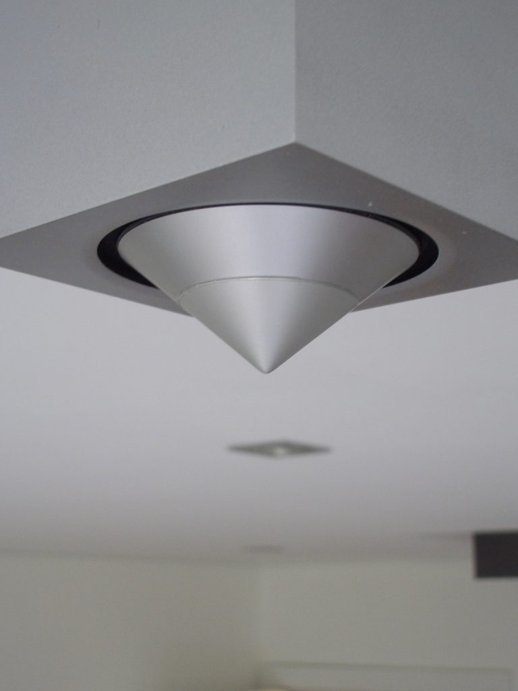
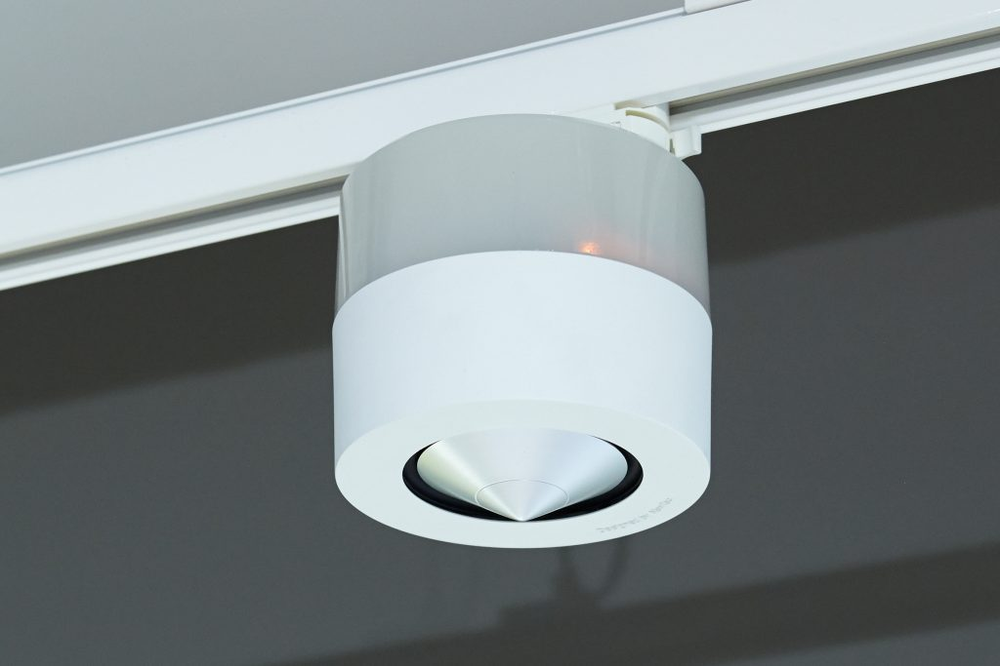

Controller with IR, Sense Ports and integ. Antenna
Pro24.r
7 020 Kč
Remote Touch Control with battery
Pro Control Bundle: Pro24z, XP-3, XP RTiPanel unlimited
25 740 Kč
Pro Control Pro24.z
13 000 Kč
Remote Touch Control with battery, docking station. Pro Control’s most powerful controller combines one-touch simplicity with robust capabilities. When used with a Pro Control or RTI central processor, the Pro24.z offers comprehensive bi-directional control over AV receivers, lighting, HVAC, security and more. A dazzling, highresolution LCD touchscreen, programmable 5-way joystick and backlit hard buttons provide intuitive operation, even in darkened rooms.
Color touchscreen display: 2.4” TFT LCD
RF control: Bi-directional ZigBee (2.4 GHz)
Compatible control processor: Pro Control ProLink.z or RTI XP series
Control via infrared (IR): Yes
Charging dock: Yes, Included
Rechargeable battery: Lithium Ion
Finish options: Glossy or Matte Finish
Number of commands and devices: Unlimited
Customizable graphics via programming software
Dimensions H x W x D (inches) 9.79 x 2.23 x .9
Pro Control Pro.ircb.4
910 Kč
Emitter Connecting Block designed to provide infrared expansion when used with Pro Control processors, the Pro.ircb.4 IR Emitter Connecting Block features one infrared signal input and four output ports allowing the connection of up to four single infrared emitters.
Compatible with most industrystandard single IR emitters
4 IR emitter output ports
Sturdy steel construction
Designed to function with no additional power supply
A 3’ mono 3.5 mm cable is provided for connection to ProLink processors
Surface mount or free standing
Number of IR output ports: 4
Enclosure: Formed steel, black powder coating
Output ports: 3.5mm jacks; works w/ industry-standard IR emitters
Infrared input: Compatible w/ industry-std. repeaters and receivers
Infrared frequency: transmission range 15 kHz – 460 kHz
Mounting: Surface-mount or free standing
Dimensions: W x H x D (inches) 5.25 x 1 x 2
Pro Control ProLink.r
8 580 Kč
Controller with IR, Sense Ports and integ. Antenna
Pro Control ProLink.z
15 600 Kč
Controller with IR, Sense Ports and integ. Antenna
Pro Control Pro.relay.4
4 680 Kč
Relay Control Module
Pro Control Pro.rfz
4 160 Kč
Range Extender for ProLink.z
Pro Control VIRSA-50
16 900 Kč
Single IR-Emitter, Bulk, 50 Pack
Pro Control VIRSA
16 900 Kč
Single IR-Emitter, 3m
SURFiR Companion Remote Control
5 720 Kč
The SURFiR companion remote represents a revolutionar y new concept in control - allow users to incorporate Apple ® or Android® devices as the main graphical inter face for their control system, while adding the convenience of hard buttons for tactile contro l. This eliminates the numerous screen swipes needed for control tasks that require frequent interaction such as channel changes, DVR contr ol or volume adjustments. The SURFiR allows the user to enjoy the oth er benefits of their smart phone or tablet device: checking email, reading news feeds, accessing social media apps, etc. T o further enhance the experience for the user, the SURFiR can track which electronic device is being controlled by the R TiPanel app and automatically controls the same. Powerful and intuitive control in an inexpensive package - everything you desire in a companion remote.
Power: 4 AAA Alkaline batteries
Power Management: Automatic On/Off
Radio Frequency Control Range: Up to 100 feet (30.5 meters)(with optional System Interfaces/Processors)
Radio Frequency Carrier: 433 MHz and 802.15.4 @ 2.4Ghz (Zigbee® technology)
Operating Temperature: +32°F to +122°F (0°C to +50°C)
Operating Humidity: 5% to 95% Non-condensing
Standby Time on Full Charge: 365 Days
Total System Memory: 256K Bytes Flash (non-volatile) memory
Device Capability: Total number of devices determined in control app (ex. RTiPanel)
Macro Capability: All programming stored in RTI XP control processor Macro capability on every button
Dimensions (L x W x D):
Enclosure: High-impact molded ABS plastic
Weight: High-impact molded ABS plastic
T1B+ Controller
11 700 Kč
The T1-B+ is the third generation of RTI's popular T1 universal system controller, now featuring the RTI dual RF platform and backlit buttons. The T1-B+ allows all other factory remote controls to be combined into one simple, ergonomic user interface providing powerful one-handed system control. Featuring a sleek new industrial design and perfect assortment of keypad buttons for commonly used functions, the T1-B+ can operate today's sophisticated media system, no matter how complex, at an affordable price.
Power: 3.6 VDC, 950 mAh Lithium-Ion Battery Pack
Power Management: Automatic On/Off (tilt switch)
Infrared Control Range: 30 feet (9.1 meters) @ 60 degrees
Infrared Frequency Range: 15kHz - 460kHz
RF Control Range: Up to 100 feet (30.5 meters)
RF Carrier: 802.15.4 @ 2.4Ghz (Zigbee technology) and 433MHz
Battery Charge Time: 3-4 Hours
Communications: USB programming port
Dimensions (L x W x D): 10.0 in (254mm) x 1.9 in (48mm) x .9 in (23mm)
Enclosure: High-impact molded ABS plastic
Operating Temperature: +32°F to +122°F (0°C to +50°C)
Operating Humidity: 5% to 95% Non-condensing
Weight: 7 oz. (200g) with battery pack
T2i Controller
15 340 Kč
The sleek, ergonomic design of the T2i is combined with powerful control capabilities needed in today’s automated home. The T2i touchscreen and 47 soft-touch buttons are customizable for easy, intuitive control, including feedback from supported electronics on its 2.8” edge-to-edge color LCD.
Power: 3.6 VDC, 900 mAh Lithium-Ion Battery Pack
Power Management: Automatic On/Off (integrated accelerometer)
Infrared Control Range: 30 feet (9.1 meters) @ 60 degrees
Infrared Frequency Transmission Range: 15kHz - 460kHz
Radio Frequency Control Range: Up to 100 feet (30.5 meters) (with optional System Interfaces/Processors)
Radio Frequency Carrier: 802.15.4 @ 2.4GHz (Zigbee® Wireless Networking) and 433MHz
Operating Temperature: +32°F to +122°F (0°C to +50°C)
Operating Humidity: 5% to 95% Non-condensing
Touchscreen Display: High-brightness color TFT LCD 1/4 VGA (240x320 pixels) with 64K colors Integrated high-resolution touchscreen
Display Size: 2.8 in (71mm) diagonal
Backlights: Blue/White LED (Keypad)
Nominal Run Time on Full Charge: 4-6 hours, continuous use (WiFi and backlight setting dependent) (5 to 7 days on average use)
Standby Time on Full Charge: 30 Days
Battery Charge Time: 3-4 Hours
Total System Memory: 32M Bytes Flash (non-volatile) memory
Device Capability: Total number of devices is limited only by memory
Macro Capability: Unlimited steps in a single macro Total number of macros is limited only by memory Macro capability on every button
Communications: USB 2.0 programming port
Dimensions (L x W x D): 10.0" (254mm) x 2.3" (58mm) x 0.7" (20mm)
Enclosure: High-impact molded ABS plastic
Weigh: 8.8 oz. (250g) with battery pack
T2i/RP4/RTiPanel Bundle
27 300 Kč
Bundle: T2i,RP-4,4x vIRsa emitters,5-user RTiPanel. Fully customizable using RTI's Integration Designer programming software, the RTiPanel offers the same intuitive control experience RTI remote controls offer, running on an Apple or Android smart phone or tablet device as well as on a Windows® PC. Perfect for use with any RTI 433-MHz wireless interface, the processor also supports one-way control via the RTiPanel app, allowing users to incorporate their smartphones and tablets easily into their control system. With the RP-4, A/V components and other equipment can be hidden away in a closet for a clean, professional look. The processor stores all system commands and macros for rock-solid reliability, providing a powerful alternative to IR repeater systems which can suffer from inconsistent performance. When used with an XP series control processor, users can view and adjust thermostats, monitor security systems and turn off lights, in addition to controlling their A/V electronics, from the office, on vacation, or virtually anywhere in between. The RTiPanel app is also available for local, one-way control using the RP-4 control processor.
Control and receive feedback from audio, video, lighting, security, climate, and more.
RTiPanel app available through Apple App Store®, Google Play® and the Amazon App Store®
Fully integrate Apple iPad®, iPhone®, iPod Touch®, Android™ devices and MS Windows PCs into new or existing RTI control systems utilizing an XP series and RP-4 control processors.
Completely customizable graphical interface.
Programmed using same Integration Designer software that is used for all RTI products.
Supports creation of both portrait and landscape views with minimal extra programming required.
RTiPanel supports full two-way feedback, including cover art, graphics, text, dynamic scrolling lists, and more.
Supports local connection via WiFi®, and off-site access via WiFi® or cellular data (if available), with automatic switching.
Highly optimized for fast connection times.
Control system programming stored on Apple/Android/Windows devices and updates automatically when changes are made.
T2x Remote Control
20 540 Kč
Defining engineering excellence - the remarkable T2x is the fifth generation of RTI’s renowned T2 remote control platform. A full complement of hard buttons provide quick, intuitive control, while the 2.8” touchscreen interface can be custom tailored for full control of devices throughout the environment. Now, RTI is taking this design platform to unprecendented levels with cutting edge features that leverage today’s technology, providing a more satisfying and reliable control experience than ever before. Innovations include grip sensors to keep the remote awake during use, an accelerometer for instant-on control, an edge to edge touchscreen allows improved gesture control, WiFi® and more. The combination of the T2x and an RTI control system provides the power, the customization, and the advanced features needed to make controlling today’s electronics a true pleasure.
Power: 3.6 VDC, 900 mAh Lithium-Ion Battery Pack
Power Management: Automatic On/Off (integrated accelerometer/grip sensors)
Infrared Control Range: 30 feet (9.1 meters) @ 60 degrees
Infrared Frequency Transmission Range: 15kHz - 460kHz
Radio Frequency Control Range: Up to 100 feet (30.5 meters) (with optional System Interfaces/Processors)
Radio Frequency Carrier: 802.15.4 @ 2.4GHz (Zigbee® Wireless Networking) and 433MHz
Wireless Ethernet: 802.11b/g/n @ 2.4Ghz
Touchscreen Display: High-brightness color TFT LCD 1/4 VGA (240x320 pixels) with 64K colors Integrated high-resolution touchscreentouchscreen
Display Size: 2.8 in (71mm) diagonal diagonal
Backlights: Blue/White LED (Keypad)
Nominal Run Time on Full Charge: 4-6 hours, continuous use (WiFi and backlight setting dependent) (5 to 7 days on average use)
Standby Time on Full Charge: 30 Days
Battery Charge Time: 3-4 Hours
Total System Memory: 128M Bytes Flash (non-volatile) memory
Device Capability: Total number of devices is limited only by memory
Macro Capability: Unlimited steps in a single macro. Total number of macros is limited only by memory Macro capability on every button
Communications: USB 2.0 programming port or via charging dock
Operating Temperature: +32°F to +122°F (0°C to +50°C)
Operating Humidity: 5% to 95% Non-condensing
Dimensions (L x W x D): 10.0" (254mm) x 2.3" (58mm) x 0.8" (20mm)
Enclosure: High-impact molded ABS plastic
Weigh: 9.0 oz. (255g) with battery pack
T3x Remote Control Black/White
23 140 Kč
The culmination of over 20 years of award-winning engineering and design experience is clearly reflected in the T3x - the flagship controller from RTI. Precision crafted with a 3.5” flush-mount high- resolution touchscreen and fully programmable soft-touch buttons, this handheld beauty has exceptional ergonomics. Building on the technological advancements of its predecessors, the T3x redefines the expectations of what is possible with a remote control, starting with grip sensors, an accelerometer, two-way control, WiFi® , dual RF, and more. The amazing T3x takes the level of innovation to new heights with haptic feedback on the touchscreen, which gives the user a subtle vibration as confirmation of a button press. The built- in camera and microphone are yet another example of the advanced capabilities of the T3x, providing video intercom support directly on the remote.
Power: 3.6 VDC, 900 mAh Lithium-Ion Battery Pack
Power Management: Automatic On/Off (integrated accelerometer/grip sensors)
Infrared Control Range: 30 feet (9.1 meters) @ 60 degrees
Infrared Frequency Transmission Range: 15kHz - 460kHz
Radio Frequency Control Range: Up to 100 feet (30.5 meters) (with optional System Interfaces/Processors)
Radio Frequency Carrier: 802.15.4 @ 2.4GHz (Zigbee® Wireless Networking) and 433MHz
Wireless Ethernet: 802.11b/g/n @ 2.4Ghz
Touchscreen Display: High-brightness color TFT LCD WVGA (480x800 pixels) with 16.7M colors. Integrated high-resolution touchscreen
Display Size: 3.5 in (89mm) diagonal
Backlights: Blue/White LED (Keypad)
Camera: Color CMOS VGA (480x640)
Microphone: Silicon MEMS
Nominal Run Time on Full Charge: 4-6 hours, continuous use (WiFi and backlight setting dependent) (5 to 7 days on average use)
Standby Time on Full Charge: 30 Days
Battery Charge Time: 3-4 Hours
Total System Memory: 128M Bytes Flash (non-volatile) memory
Device Capability: Total number of devices is limited only by memory
Macro Capability: Unlimited steps in a single macro. Total number of macros is limited only by memory Macro capability on every button
Communications: USB 2.0 programming port or via charging dock
Operating Temperature: +32°F to +122°F (0°C to +50°C)
Operating Humidity: 5% to 95% Non-condensing
Dimensions (L x W x D): 10.0" (254mm) x 2.3" (58mm) x 0.8" (20mm)
Enclosure: High-impact molded ABS plastic
Weigh: 9.0 oz. (255g) with battery pack
T4X Remote Control
24 700 Kč
Introducing the T4x remote control, flagship of the award-winning wireless interface lineup from RTI. Precision engineered with a large high-resolution capacitive touchscreen, the essential hard buttons, and a completely customizable interface, the user will enjoy simple, intuitve control and superb ergonomics. Perfectly suited for the smart home or office, the T4x sets the standard in wireless control with advanced features including grip sensors, WiFi, dual RF, and more.
Power: 3.6 VDC, 900 mAh Lithium-Ion Battery Pack
Power Management: Automatic On/Off (integrated accelerometer/grip sensors)
Infrared Control Range: 30 feet (9.1 meters) @ 60 degrees
Infrared Frequency Transmission Range: 15kHz - 460kHz
Radio Frequency Control Range: Up to 100 feet (30.5 meters) (with optional System Interfaces/Processors)
Radio Frequency Carrier: 802.15.4 @ 2.4GHz (Zigbee® Wireless Networking) and 433MHz
Wireless Ethernet: 802.11b/g/n @ 2.4Ghz
Touchscreen Display: High-brightness color TFT LCD WVGA (480x800 pixels) with 16.7M colors. Integrated high-resolution touchscreen
Display Size: Integrated high-resolution capacitive touchscreen 4” (101mm) diagonal
Backlights: Blue/White LED (Keypad)
Nominal Run Time on Full Charge: 4-6 hours, continuous use (WiFi and backlight setting dependent) (5 to 7 days on average use)
Standby Time on Full Charge: 30 Days
Battery Charge Time: 3-4 Hours
Total System Memory: 128M Bytes Flash (non-volatile) memory
Device Capability: Total number of devices is limited only by memory
Macro Capability: Unlimited steps in a single macro. Total number of macros is limited only by memory Macro capability on every button
Communications: USB 2.0 programming port or via charging dock
Operating Temperature: +32°F to +122°F (0°C to +50°C)
Operating Humidity: 5% to 95% Non-condensing
Dimensions (L x W x D):8.3” (211mm) x 2.3” (58mm) x 0.8” (20mm)
Enclosure: High-impact molded ABS plastic
Weigh: 7.5 oz. (213g) with battery pack
CX10 10 inch Countertop/Under-Cabinet Touchpanel, incl. Power Supply
43 940 Kč
CX10 delivers intuitive control and a high-end entertainment experience in a sleek touchpanel design. The CX10's 10-inch, high-resolution LCD screen offers ample space to create the ultimate custom user interface. With this level of personalization, any user can confidently manipulate the environment and entertainment. The versatile CX10 also doubles as a display for watching an HD movie or a television show via the integrated HDBaseT video input and stereo speakers. Easy to mount on a countertop or beneath a cabinet, the touchpanel display has a tilt range from 10 degrees to 90 degrees for the best viewing angle possible. Additional user-friendly features include video intercom support, composite video viewing and a proximity sensor.
10.1” widescreen LCD with 1280x800 (WXGA) resolution and integrated capacitive touchscreen.
Displays HD video via the integrated HDBaseT video input (1080p/1080i/720p/480p resolution video support).
View analog video sources such as security cameras via the composite video input.
Stereo audio input and speakers.
Integrated 10/100 Base-T (with PoE+) and 802.11b/g/n wireless Ethernet for viewing video from IP security cameras, enhanced twoway feedback and remote programming updates.
Video intercom capability via the built-in camera, microphone, and speakers.
Proximity sensor automatically wakes the unit as a user approaches.
Ambient light sensor automatically adjusts the backlighting.
Built-in high output IR port for direct control of devices through an IR connecting block.
Powered by power supply (included), an RTI CB8 connecting block or PoE+ (Power over Ethernet Plus).
Countertop or under cabinet (inverted) mounting option and adjustable tilt display (10°-90°).
Optional modules/processors provide advanced two-way control of electronics such as media servers, lighting, security and more.
Dimensions (LxWxH): 8.97” (227.8mm) x 9.90” (251.64mm) x 8.0”(203.2mm)
Weight: 3.84lbs (1744g)
CX10 7 inch Countertop/Under-Cabinet Touchpanel, incl. Power Supply
25 740 Kč
The 7” LCD touchpanel has adjustable tilt, allowing the display to be angled straight up to nearly flat. The CX7 can even be mounted inverted under a cabinet. Additional features include wired and wireless Ethernet for two-way control, digital video (motion JPEG) and web browsing, while analog audio/video inputs and stereo speakers provide video viewing from sources such as satellite TV or security cameras. The integrated camera, microphone and speakers enable the convenience of video intercom support directly on the CX7.
800x480 WVGA LCD with integrated multi-touch capacitive touch screen
Composite, S-Video or Component video input at up to 480i, 576i, 480p or 576p
Analog audio input and stereo speakers
Integrated 10/100 Base-T and 802.11 Wireless Ethernet
Built-in camera, microphone and speakers enable video intercom capability
Built-in high output IR port for direct control.
Powered using power supply, CB8 or PoE (Power over Ethernet)
Optional modules/processors provide additional two-way control
USB and Ethernet Programming
Adjustable tilt display (from 10°-90°) or unit can be mounted under a cabinet.
Optional modules/processors provide additional control capabilities including two-way communication via RS-232/IP, sensing, IR and relay control.
Dimensions (LxWxH): 7.5” (190mm) x 7.3” (185mm) x 6.25”(159mm)
Weight: 2.0 lbs (934g)
RP-4 RTiPanel 5 User
6 188 Kč
RP-4 RTiPanel 5 User License
RP-4 RTiPanel Single
2 028 Kč
RP-4 RTiPanel Single License
XP RTiPanel Single
4 108 Kč
XP RTiPanel Single License
XP RTiPanel Unlimited
11 440 Kč
XP RTiPanel Unlimited License
Lasershark Certificate
2 080 Kč
Certificate for customized engravings
ZW-PRO
3 328 Kč
Z-Wave Programming Tool (USB Stick) for use with Z-Wave wireless networks. Attached to a standard USB port of a laptop computer, the ZW-PRO wirelessly communicates with Z-Wave enabled devices during the network inclusion setup process. Used in conjunction with the Z-Wave Manager configuration software, the ZW-PRO simplifies the Z-Wave network setup, by allowing the installer to roam the installation with a laptop as they move between device locations.
IR-PRO
12 350 Kč
IR Capture/Programming Kit
ZB-PRO
4 160 Kč
The ZB-Pro is a Professional Network Management Tool for use with RTI 2.4GHz wireless ZigBee® networks. Attached to a standard USB port of a PC, the ZB-Pro communicates with ZM-24 Transceiver Modules via 2.4GHz RF during the setup process.kit
USBT2X
780 Kč
USB Programming Cable for T2i,T2x,T3x
AD-4x
25 740 Kč
4-Zone / 4-Source Audio Amp Systém. Four analog stereo audio output zones with input switching and pre-outs. Twenty-five watts per channel in each zone. Four analog audio source inputs with independent trim level adjustment. Accessory wall plate allows source equipment to be connected remotely with a Cat-5 cable. Controlled via infrared, or two-way control (with status feedback) via RS-232 and IP using RTI control systems. Independent volume and tone control for all audio zones. Ethernet support and a web interface allows the AD-4x output zones to be tested during installation via a web browser on a smartphone, tablet or PC. Web interface allows for output zones to be configured into groups, allowing them to be controlled as a single zone. Controlled via Infrared and RS-232 including two-way feedback when installed with RTI control systems. Optional phone and doorbell mute function. Zone power indicator LEDs. Compact, low-profile design allows shelf or rack installation.
AD-8x
49 140 Kč
8-Zone / 8-Source Audio Amp Systém. Eight analog audio source inputs with independent trim level adjustment. Integrated 16 channel amplifier utilizes Cool Power® technology. Provides 25 watts per channel in each zone. Distribute eight audio source inputs to eight zones, expandable to 64 zones by stacking additional AD-8x units. Ethernet support and a web interface allows the AD-8x output zones to be tested during installation via a web browser on a smartphone, tablet or PC. Web interface allows zones to be configured into groups, allowing them to be controlled as a single zone. Controlled via IR, and two-way control with feedback via RS-232 and IP when installed with RTI control systems. Accessory wall plate (RSP-1) allows remote source equipment to be connected and controlled remotely over a Cat-5 cable. Optional phone and doorbell mute function.
AD-16x
71 500 Kč
16-Zone / 16-Source Audio Matrix Switcher, jako koncové stupně použít zesilovače CP450 nebo CP1650. Provides routing of 16 stereo audio sources to 16 zones. Eight remote source inputs allow devices located in other rooms to be used as a global source using the RSP-1 accessory. Up to four AD-16x units may be source-looped, for up to 64 output zones. Custom project labeling allows integrators to name all of the zones and sources for more efficient programming (via AD64 driver). Dynamic audio source management tracks the sources that are active, allowing users to select a different one and avoid inadvertent music changes (via AD64 driver). Preamp outputs require external amplification via RTI or third-party audio amplifier. Eight bands of parametric audio equalizing in all zones. Built-in web interface allows zones to be configured and grouped, allowing multiple outputs to be controlled as a single zone. Audio input trim adjustment on each source. Controlled via IP, RS-232 or Infrared. Optional phone and doorbell mute accessory. Rack mountable (3U rack form factor) or free standing.


PDM-1
2 210 Kč
The PDM-1 Phone-Doorbell Mute Plate is used with RTI Audio distribution systems (Models: AD-8x/AD-4x/AD-8/AD-4) to provide a connection point for phone and doorbell systems. When an incoming call is received or a doorbell is rung, the voltage from these systems is passed to the audio distribution system and will temporarily mute the audio. The PDM-1 is wall mounted in a standard single gang electrical box and uses a Decora style wall plate (not included).
RSP-1
2 210 Kč
The RSP-1 Remote Source Plate is used with RTI Audio distribution systems (Models: AD-8x/AD-4x/AD-8/AD-4) to allow a convenient connection and control of remote audio sources. Wall mounted in a standard single gang electrical box, the RSP-1 provides the analog audio inputs for devices such as a PC, Apple iPod® dock or CD player that are located away from a centralized rack. A single Cat-5 cable delivers the audio to the RTI audio distribution system and infrared control to the audio source via the RTI control system.
CP1650
31 200 Kč
16 Channel Amplifier (8x 50W L/R), controllable. Sixteen channel amplifier utilizes Cool Power® technology. Power output is 50 watts per channel. Bridgeable audio outputs for increasing power to 100W per channel. Audio input level adjustment on each channel. Easily expands the RTI AD-4x and AD-8x audio distribution systems. Compatible with virtually any audio distribution system. Voltage trigger (3-30V AC/DC), RS-232 or IR power control. Rackmount or free standing installation
CP450
20 150 Kč
4 Channel Amplifier (2x 50W L/R). Four channel amplifier utilizes Cool Power® technology. Power output is 50W per channel. Easily expands the RTI AD-4x and AD-8x audio distribution systems. Compatible with virtually any audio distribution system. Voltage trigger (3-30V AC/DC), RS-232 or IR power control. IR passthru port for cascading IR signal to additional amplifiers. Rackmount (1U) or free standing installation.
AMR-220
5 720 Kč
2 Input Amplifier with Stereo Loop and Mic mixing, 2 analog Audio Inputs (switchable), Balanced/Unbalanced MIC Input w/ 48V Phantom Power, 2x20W (4Ohm), 1x40W bridged (8Ohm), EQ (Bass / Treble), controlable via IR / RS-232, small form factor.
AMR-350
11 960 Kč
3 Input Amplifier - 2x50W (4Ohm) or 1x100W (8 Ohm, bridged), EQ (Bass / Treble), Control via IR / RS-232 / IP, Web UI (control / config), Audio loop out, Compact Form Factor
AMV-340
7 020 Kč
3 Input Constant Voltage amplifier w/ Mic mixing, 40W 70/100V Mixer/Amplifier, 2 analogue Inputs and 1 digital Input (switchable), Balanced/Unbalanced MIC-Input w/ 48V Phantom Power, EQ (Treble/Bass), RS-232 / IR, compact Form Factor.
VMX-16
na dotaz
16x16 Modular Matrix Chassis pro 16 VMX karet, HDCP1.4 kompat.
VMX-8
na dotaz
8x8 Modular Matrix Chassis pro 8 VMX karet, HDCP1.4 kompat.
VMX-IM4
na dotaz
4 Channel HDMI 1.4 Input Card for VMX Series
VMX-IT4
na dotaz
4 Channel HDBT Input Card for VMX Series
VMX-OM4
na dotaz
4 Channel HDMI 1.4 Output Card for VMX Series
VMX-OT4
na dotaz
4 Kanal HDBT Output Karte for VMX Matrix
VSS-51
30 420 Kč
Made up of the VSW-51 5x1 presentation scaler switcher and the VSW-51R HDBaseT receiver, the VSS-51 Presentation Scaler Switcher Kit is the perfect AV solution in conference rooms, classrooms and lecture halls. The VSW-51 combines seamless switching with advanced scaling to provide excellent picture quality regardless of the source. The compact switcher comes with five video inputs, including three HDMI, one display port and one VGA port. Video is output through an HDMI port and a mirrored HDBaseT port for delivery of HD video to an additional display via the included VSW-51R HDBaseT receiver. A Mic input is also available with support for condensor and dynamic microphones, and line level audio.
Includes VWS-51 High-definition, multi-format 5x1 presentation scaler switcher.
Includes VWS-51R HDBaseT Receiver.
Built-in scaler upscales input resolution to up to 1920 x 1200 output resolution.
Auto-switching, Quick Switch technology.
HDMI output.
Mirrored HDBaseT output enables long-distance wiring over CAT cable
Supports HDBaseT 4-Play with transmission of video, audio, power (PoH), and control signals (IR / RS-232) over a single Cat-5/6 cable.
Provides signal switching of up to 5 video sources.
Mirrored HDMI and HDBaseT output 230ft (70m) for Full HD video.
Supports HDMI, Display Port and VGA sources.
Balanced/unbalanced adjustable microphone input with 48V phantom power for condenser, dynamic or wireless microphones.
Controllable via front control panel, RS-232 or web interface.
VSW-41
na dotaz
4x1 HDMI 2.0 Switcher
VTX-R
na dotaz
VTX-R - Extender Receiver
VTX-T
na dotaz
VTX-T - Extender Transmitter
VXT-LR
na dotaz
VXT-LR - Extender Pair - extender/transmitter
VDA-12
na dotaz
1x2 HDMI 2.0 Splitter, až 4K@60Hz 4:4:4, EDID Management
VDA-14
na dotaz
1x4 HDMI 2.0 Splitter, až 4K@60Hz 4:4:4, EDID Management
VFX-124
na dotaz
12+4 Slots Flexible Matrix with 4.3" Touch Screen
VFX-248
na dotaz
24+8 Slots Flexible Matrix with 7" Touch Screen
VFX-IHM
na dotaz
HDMI 1.4 4K Seamless Input Card for FMX Series
VFX-IHT
na dotaz
HDBT 4K Seamless Input Card for FMX Series
VFX-OHM
na dotaz
HDMI 1.4 4K Seamless Output Card for FMX Series
VFX-OHT
na dotaz
HDBT 4K Seamless Output card for FMX Series
KX7
25 740 Kč
Wall-mount 7" color touch panel, white bezel
KA-8
25 740 Kč
8" Wall-Mount/Tabletop Touchpanel, black bezel
KA8-Stand
1 300 Kč
Tabletop Stand Aluminum for KA-8
KA-11
43 940 Kč
11" Wall-Mount/Tabletop Touchpanel, black bezel
KA11-Stand
1 950 Kč
Tabletop Stand Aluminum for KA-11
WK2
17 940 Kč
Water Resistant In-wall Keypad w/ 15 buttons and OLED display
RK1-2+
5 850 Kč
Keypad with 2 buttons. White, black and light almond button faceplate included. Laser Shark Certificate for engraving included. Decora faceplates in satin white and black also included.
RK1-4+
5 850 Kč
Keypad with 4 buttons, with decora faceplates
RK1-8+
5 850 Kč
Keypad with 8 buttons, with decora faceplates
BB-RK1
286 Kč
Multi-Room Audio Keypad to connect with RTI controller RP-6, MRP-64 or XP-8, control up to 10 Spources, Volume backlit Display, direct IR control port drives up to 300m wire, USB programmable, black, white, almond, 2-way, incl. 2 extra extra key caps (labeled "power" and "mute") that can replace the "on" and "off" button keycaps, incl. white and black bezel
BB-RK1-DW
208 Kč
Plastic Back Box for RK1 (dry walls/open cavity walls, 1-gang), dimensions (H x W x D) outer dim.: 104mm x 69,8mm x 63,5mm.
Bezel RK1/RKM white/black
520 Kč
BB-KX10
1 560 Kč
Dry Wall Construction Back Box for KX10 (dry wall)
BB-KX2
780 Kč
Back Box for KX2, metal
BB-KX3
1 300 Kč
Back Box for KX3, Metal
BB-KX7
1 560 Kč
Pre-Construction Back Box for KX7 (dry wall).
BZB-KX10BA
1 430 Kč
KX10 Bezel Faceplate Assembly, Brushed Aluminium.
BZB-KX10BL
1 170 Kč
KX10 Bezel Faceplate Assembly, Black
BZB-KX10LA
1 170 Kč
KX10 Bezel Faceplate Assembly, Light Almond.
PBZB-KX2
910 Kč
KX2 Bezel Faceplate Assembly, Black.
BZB-KX3BA
1 430 Kč
KX3 Bezel Faceplate Assembly, Brushed Aluminium
BZB-KX3BL
1 040 Kč
KX3 Bezel Faceplate Assembly, Black.
BZB-KX7BL
1 170 Kč
KX7 Bezel Faceplate Assembly, Black.
BZB-KX7BR
1 300 Kč
KX7 Bezel Faceplate Assembly, Brushed Aluminium.
BZB-KX7LA
1 170 Kč
KX7 Bezel Faceplate Assembly, Light Almond.
PBZBR-KX2
1 430 Kč
KX2 Bezel Faceplate Assembly, Brushed Aluminium.
CB-WK2
780 Kč
Back Box for WK2
T1T2BAT
1 300 Kč
Replacement battery for T1,T2+,T1B,T1B+,T2B
T2CBAT
1 300 Kč
Replacement battery for T3,T2C,T2C+,T2Cs,T2Cs+
T4BAT
3 900 Kč
Replacement battery for T4,T4Z.
T3VBAT
1 560 Kč
Replacement battery for T3V,T3VZ,T3V+.
T2XBAT
1 560 Kč
Replacement battery for T2x,T3x,T4x.
PS REMOTES
1 300 Kč
Power Supply for all Pro Control remotes, 5V 1A
DS-T4
2 860 Kč
Replacement Docking Station T4
DS-T2C-T2Cs-T2B
2 340 Kč
Replacement Docking Station for T2C-T2Cs-T2B
DS-T3V
2 600 Kč
Replacement Docking Station for T3-V
PS T4
1 820 Kč
Power Supply T4 Touch Panel, 12V 4A
DS-T1B-T1BP
2 600 Kč
Replacement Docking Station for T1B/T1B+
DS-T2X
2 600 Kč
Replacement Docking Station for T2x,T2i,T3x
PS T4
1 820 Kč
Power Supply T4 Touch Panel, 12V 4A
DS-T3
2 054 Kč
Replacement Docking Station T3
PS REMOTES3
1 300 Kč
Power supply for RTI remote, except T4,T2X,T2I,T3X
NewTec Altura 50
139 €
Speaker for ceiling-mounting installation with an elegant design and a large sound distribution. The ceiling mounting loudspeaker CONO alto is equipped with an extremely wide 360° sound distribution which guarantees a high-quality and accurate sound reproduction. It is distinguished by the simplest ceiling installation and an elegant design. The CONO alto is not recognisable as a conventional loudspeaker due to its unique appearance. It does not require any grille, ensuring therefore a clear and precise sound reproduction. Moreover, with a minimum installation depth of 43mm to 55mm, depending on the model, the insert is particularly suitable for very low ceiling construction. The ceiling cut-out is 130 mm.
Type: Ceiling mounted
Principle: One way system
Dimensions D X H: ø 180mm x 25mm (in Sight)
Ceiling recess: 130mm
Installation depth: 55mm
Weight: 0,8 kg
Enclosure: Rings of high-performance synthetic (carbon-fiber-reinforced) 100°-130° Continuous use - Formstable up to 150° - Fireclass UL94 V-0 “self-extinguishing"
Colours: silver, white, black - every RAL color on request
Equipment: 1 Newtec KA10-16 by Scanspeak
Impedance: 16 Ω
Nominal-/music power: 50 Watt / 90 Watt
Nominal sensitivity ( 1 W , 1 m ): 83,4 dB (+6dB to 360°)
Maximum SPL: 100 dB ( active high pass 120 Hz / 18 dB – Oktave)
Frequency response: 105 - 20.000 Hz (+/-3 dB)
Connectors: Screw-terminal
NewTec CONO alto M
197 €
Speaker for ceiling-mounting installation with an elegant design and a large sound distribution. The ceiling mounting loudspeaker CONO alto is equipped with an extremely wide 360° sound distribution which guarantees a high-quality and accurate sound reproduction. It is distinguished by the simplest ceiling installation and an elegant design. The CONO alto is not recognisable as a conventional loudspeaker due to its unique appearance. It does not require any grille, ensuring therefore a clear and precise sound reproduction. Moreover, with a minimum installation depth of 43mm to 55mm, depending on the model, the insert is particularly suitable for very low ceiling construction. The ceiling cut-out is 130 mm.
Type: Ceiling mounted
Principle: One way system
Dimensions D X H: ø 180mm x 25mm (in Sight)
Ceiling recess: 130mm
Installation depth: 79,5mm
Weight: 0,9 kg
Enclosure: Rings of high-performance synthetic (carbon-fiber-reinforced) 100°-130° Continuous use - Formstable up to 150° - Fireclass UL94 V-0 “self-extinguishing"
Colours: silver, white, black - every RAL color on request
Equipment: 1 Newtec KA10-4 by Scanspeak
Impedance: 4 Ω
Nominal-/music power: 50 Watt / 90 Watt
Nominal sensitivity ( 1 W , 1 m ): 85,5 dB (+6dB to 360°)
Maximum SPL: 102,5 dB
Frequency response: 95 – 21.000 Hz ( +/- 3 dB)
Connectors: print clips
NewTec CONO alto S
355 €
Speaker for ceiling-mounting installation with an elegant design and a large sound distribution. The ceiling mounting loudspeaker CONO alto is equipped with an extremely wide 360° sound distribution which guarantees a high-quality and accurate sound reproduction. It is distinguished by the simplest ceiling installation and an elegant design. The CONO alto is not recognisable as a conventional loudspeaker due to its unique appearance. It does not require any grille, ensuring therefore a clear and precise sound reproduction. Moreover, with a minimum installation depth of 43mm to 55mm, depending on the model, the insert is particularly suitable for very low ceiling construction. The ceiling cut-out is 130 mm.
Type: Ceiling mounted
Principle: One way system
Dimensions D X H: ø 180mm x 45mm (in Sight)
Ceiling recess: 130mm
Installation depth: 74,1mm (43mm if connection terminal are removed)
Weight: 1,5 kg
Enclosure: Rings of high-performance synthetic (carbon-fiber-reinforced) 100°-130° Continuous use - Formstable up to 150° - Fireclass UL94 V-0 “self-extinguishing"
Colours: silver, white, black - every RAL color on request
Equipment: 1 x NewTec M13 – 8633 by Scanspeak
Impedance: 8 Ω
Nominal-/music power: 100 Watt / 165 Watt
Nominal sensitivity ( 1 W , 1 m ): 82,1 dB (+6 dB to 360°)
Maximum SPL: 104 dB ( active high pass 120 Hz / 18 dB – Ok)
Frequency response: 105 - 20.000 Hz (+/-3 dB)
Connectors: pole clip gold plated
NewTec CONO alto V
159 €
Speaker for ceiling-mounting installation with an elegant design and a large sound distribution. The ceiling mounting loudspeaker CONO alto is equipped with an extremely wide 360° sound distribution which guarantees a high-quality and accurate sound reproduction. It is distinguished by the simplest ceiling installation and an elegant design. The CONO alto is not recognisable as a conventional loudspeaker due to its unique appearance. It does not require any grille, ensuring therefore a clear and precise sound reproduction. Moreover, with a minimum installation depth of 43mm to 55mm, depending on the model, the insert is particularly suitable for very low ceiling construction. The ceiling cut-out is 130 mm.
Type: Ceiling mounted
Principle: One way system
Dimensions D X H: ø 180mm x 25mm (in Sight)
Ceiling recess: 130mm
Installation depth: 92mm
Weight: 1,06 kg
Enclosure: Rings of high-performance synthetic (carbon-fiber-reinforced) 100°-130° Continuous use - Formstable up to 150° - Fireclass UL94 V-0 “self-extinguishing"
Colours: silver, white, black - every RAL color on request
Equipment: 1 Newtec KA10-4 by Scanspeak
Impedance: 100 Volt / 2000 Ω to 250 Ω
Nominal-/music power: 2,5-5-10-20 Watt einstellbar
Nominal sensitivity ( 1 W , 1 m ): 86,8 dB (+6dB to 360°)
Maximum SPL: 99,5 dB
Frequency response: 85 – 21.000 Hz ( +/- 3 dB)
Connectors: screw connector gold plated
NewTec CONO puro 50
149 €
Pure optics for pure sound. The new CONO puro fits perfectly into the new trend “small and pure”. Its diameter is only 150 mm. Furthermore, due to the new quick-release fastener, no more screws are necessary. This means faster installation and “screw-less” look. The material thickness of the ring is as small aspossible for the CONO puro to lay flat on the ceiling and avoid possible shadows due to uneven ceilings by means of a special rubber coating which cushions the sides. For the installation, the required ceiling cut-out is 120 mm and the built-in depth from 55 mm – 92 mm depending on model.
Reduced design and quickest installation with a quick-release system
Type: Ceiling speaker
Principle: One way system
Dimensions D X H: ø 150mm x 20mm (in Sight)
Ceiling recess: 120mm
Installation depth: 55mm
Weight: 626 gr.
Enclosure: Rings of high-performance synthetic (carbon-fiber-reinforced) 100°-130° Continuous use - Formstable up to 150° - Fireclass UL94 V-0 “self-extinguishing"
Colours: white, black - every RAL color on request
Equipment: 1 Newtec KA10-16 by Scanspeak
Impedance: 16 Ω
Nominal-/music power: 50 Watt / 90 Watt
Nominal sensitivity ( 1 W , 1 m ): 83,4 dB (+6 dB to 360°)
Maximum SPL: 99,5 dB
Frequency response: 105 - 20.000 Hz (+/-3 dB)
Connectors: Screw-terminal
NewTec CONO puro S
355 €
Speaker for ceiling-mounting installation with an elegant design and a large sound distribution. The ceiling mounting loudspeaker CONO alto is equipped with an extremely wide 360° sound distribution which guarantees a high-quality and accurate sound reproduction. It is distinguished by the simplest ceiling installation and an elegant design. The CONO alto is not recognisable as a conventional loudspeaker due to its unique appearance. It does not require any grille, ensuring therefore a clear and precise sound reproduction. Moreover, with a minimum installation depth of 43mm to 55mm, depending on the model, the insert is particularly suitable for very low ceiling construction. The ceiling cut-out is 130 mm.
Type: Ceiling mounted
Principle: One way system
Dimensions D X H: ø 180mm x 25mm (in Sight)
Ceiling recess: 130mm
Installation depth: 92mm
Weight: 1,06 kg
Enclosure: Rings of high-performance synthetic (carbon-fiber-reinforced) 100°-130° Continuous use - Formstable up to 150° - Fireclass UL94 V-0 “self-extinguishing"
Colours: silver, white, black - every RAL color on request
Equipment: 1 Newtec KA10-4 by Scanspeak
Impedance: 100 Volt / 2000 Ω to 250 Ω
Nominal-/music power: 2,5-5-10-20 Watt einstellbar
Nominal sensitivity ( 1 W , 1 m ): 86,8 dB (+6dB to 360°)
Maximum SPL: 99,5 dB
Frequency response: 85 – 21.000 Hz ( +/- 3 dB)
Connectors: screw connector gold plated
NewTec CONO puro V
169 €
Speaker for ceiling-mounting installation with an elegant design and a large sound distribution. The ceiling mounting loudspeaker CONO alto is equipped with an extremely wide 360° sound distribution which guarantees a high-quality and accurate sound reproduction. It is distinguished by the simplest ceiling installation and an elegant design. The CONO alto is not recognisable as a conventional loudspeaker due to its unique appearance. It does not require any grille, ensuring therefore a clear and precise sound reproduction. Moreover, with a minimum installation depth of 43mm to 55mm, depending on the model, the insert is particularly suitable for very low ceiling construction. The ceiling cut-out is 130 mm.
Type: Ceiling mounted
Principle: One way speaker
Dimensions D X H: ø 150mm x 20mm (in Sight)
Ceiling recess: 120mm
Installation depth: 92mm
Weight: 900 gr.
Enclosure: Rings of high-performance synthetic (carbon-fiber-reinforced) 100°-130° Continuous use - Formstable up to 150° - Fireclass UL94 V-0 “self-extinguishing"
Colours: silver, white, black - every RAL color on request
Equipment: 1 Newtec KA10-4 by Scanspeak
Impedance: 100 Volt / 2000 Ω to 250 Ω
Nominal-/music power: 2,5-5-10-20 Watt einstellbar
Nominal sensitivity ( 1 W , 1 m ): 86,8 dB (+6dB to 360°)
Maximum SPL: 99,5 dB
Frequency response: 85 – 21.000 Hz ( +/- 3 dB)
Connectors: print clips
NewTec Pendura 50
279 €
The suspended sound solution for good sound and stylish design. The CONO pendo can be fixed directly to the concrete surface and offers a visual protection for the attachment. The length of the suspension of the CONO pendo can be adjusted according to the desired distance. The height and position of the CONO pendo is adjusted to the height and positions of the luminaires and provides a symbiosis of light and sound. Standard cable length is 1,5 meter. Longer cables can also be supplied on request (see price list: custom-made products).
Type: Ceiling suspended speaker
Principle: One way system
Dimensions D X H: ø 134mm x 135mm + cable standard length 1,5m
Weight: 1,2 kg
Enclosure: carbon-fiber-reinforced plastic (170° Continuous use) - recyclable - Formstable up to 220° - Fireclass UL94 V-0 “self-extinguishing"
Colours: silver, white, black
Equipment: 1 Newtec KA10-16 by Scanspeak
Impedance: 16 Ω
Nominal-/music power: 50 Watt RMS / 90 Watt
Nominal sensitivity ( 1 W , 1 m ): 83,4 dB (+6 dB to 360°) on 16 Ω
Maximum SPL: 100 dB ( active high pass 120 Hz / 18 dB – Oktave)
Frequency response: 105 - 20.000 Hz (+/-3 dB)
Connectors: Screw-terminal
NewTec CONO pendo M
378 €
The suspended sound solution for good sound and stylish design. The CONO pendo can be fixed directly to the concrete surface and offers a visual protection for the attachment. The length of the suspension of the CONO pendo can be adjusted according to the desired distance. The height and position of the CONO pendo is adjusted to the height and positions of the luminaires and provides a symbiosis of light and sound. Standard cable length is 1,5 meter. Longer cables can also be supplied on request (see price list: custom-made products).
Type: Ceiling suspended speaker
Principle: One way system
Dimensions D X H: ø 134mm x 135mm + cable standard length 1,5m
Weight: 1,2 kg
Enclosure: carbon-fiber-reinforced plastic (170° Continuous use) - recyclable - Formstable up to 220° - Fireclass UL94 V-0 “self-extinguishing"
Colours: silver, white, black
Equipment: 1 Newtec KA10-16 by Scanspeak
Impedance: 16 Ω
Nominal-/music power: 50 Watt RMS / 90 Watt
Nominal sensitivity ( 1 W , 1 m ): 83,4 dB (+6 dB to 360°) on 16 Ω
Maximum SPL: 100 dB ( active high pass 120 Hz / 18 dB – Oktave)
Frequency response: 105 - 20.000 Hz (+/-3 dB)
Connectors: Screw-terminal
NewTec CONO pendo S
449 €
The suspended sound solution for good sound and stylish design. The CONO pendo can be fixed directly to the concrete surface and offers a visual protection for the attachment. The length of the suspension of the CONO pendo can be adjusted according to the desired distance. The height and position of the CONO pendo is adjusted to the height and positions of the luminaires and provides a symbiosis of light and sound. Standard cable length is 1,5 meter. Longer cables can also be supplied on request (see price list: custom-made products).
Type: Ceiling suspended speaker
Principle: One way system
Dimensions D X H: ø 134mm x 135mm + cable standard length 1,5m
Weight: 1,6 kg
Enclosure: carbon-fiber-reinforced plastic (170° Continuous use) - recyclable - Formstable up to 220° - Fireclass UL94 V-0 “self-extinguishing"
Colours: silver, white, black
Equipment: 1 Newtec M13 - 8633 by Scanspeak
Impedance: 8 Ω
Nominal-/music power: 100 Watt RMS / 180 Watt
Nominal sensitivity ( 1 W , 1 m ): 82,8 dB (+6dB to 360°)
Maximum SPL: 105 dB ( active high pass 120 Hz / 18 dB – Oktave)
Frequency response: 110 – 23.000 Hz ( +/- 3 dB)
Connectors: Screw-terminal
NewTec CONO pendo V
349 €
The suspended sound solution for good sound and stylish design. The CONO pendo can be fixed directly to the concrete surface and offers a visual protection for the attachment. The length of the suspension of the CONO pendo can be adjusted according to the desired distance. The height and position of the CONO pendo is adjusted to the height and positions of the luminaires and provides a symbiosis of light and sound. Standard cable length is 1,5 meter. Longer cables can also be supplied on request (see price list: custom-made products).
Type: Ceiling suspended speaker
Principle: One way speaker
Dimensions D X H: ø 134mm x 135mm + cable standard length 1,5m
Weight: 1,9 kg
Enclosure: carbon-fiber-reinforced plastic (170° Continuous use) - recyclable - Formstable up to 220° - Fireclass UL94 V-0 “self-extinguishing"
Colours: silver, white, black
Equipment: 1 Newtec KA10-4 by Scanspeak
Impedance: 100 Volt / 2000 Ω to 250 Ω
Nominal-/music power: 2,5-5-10-20 Watt einstellbar
Nominal sensitivity ( 1 W , 1 m ): 86,2 dB (+6dB to 360°)
Maximum SPL: 99,5 dB
Frequency response: 85 – 21.000 Hz ( +/- 3 dB)
Connectors: print clips
NewTec Solura 50
299 €
The wall-mounting speaker with exceptional audio performance. The CONO solo is primarily used when the architectural circumstances do not allow any installation on the ceiling. For example in atriums without suspension possibilities, listed buildings or simply in order to complement existing lighting systems on the wall. The installation height is recommended at about 2,4 meters or higher. This way the sound source remains always above the ears of the listeners, resulting in optimum sound quality in all listening positions.
Type: Ceiling suspended speaker
Principle: One way speaker
Dimensions D X H: ø 134mm x 135mm + cable standard length 1,5m
Weight: 1,9 kg
Enclosure: carbon-fiber-reinforced plastic (170° Continuous use) - recyclable - Formstable up to 220° - Fireclass UL94 V-0 “self-extinguishing"
Colours: silver, white, black
Equipment: 1 Newtec KA10-4 by Scanspeak
Impedance: 100 Volt / 2000 Ω to 250 Ω
Nominal-/music power: 2,5-5-10-20 Watt einstellbar
Nominal sensitivity ( 1 W , 1 m ): 86,2 dB (+6dB to 360°)
Maximum SPL: 99,5 dB
Frequency response: 85 – 21.000 Hz ( +/- 3 dB)
Connectors: print clips
NewTec Solura 100
399 €
The wall-mounting speaker with exceptional audio performance. The CONO solo is primarily used when the architectural circumstances do not allow any installation on the ceiling. For example in atriums without suspension possibilities, listed buildings or simply in order to complement existing lighting systems on the wall. The installation height is recommended at about 2,4 meters or higher. This way the sound source remains always above the ears of the listeners, resulting in optimum sound quality in all listening positions.
Type: Ceiling suspended speaker
Principle: One way sxstem
Dimensions D X H: ø134 x 130 x 220mm
Weight: 1,5 kg
Enclosure: carbon-fiber-reinforced plastic (170° Continuous use) - recyclable - Formstable up to 220° - Fireclass UL94 V-0 “self-extinguishing"
Colours: silver, white
Equipment: 1 Newtec KA10-16 by Scanspeak
Impedance: 16 Ω
Nominal-/music power: 50 Watt RMS / 90 Watt
Nominal sensitivity ( 1 W , 1 m ): 83,4 dB (+6 dB to 360°) by 16 Ω
Maximum SPL: 100 dB ( active high pass 120 Hz / 18 dB – Oktave)
Frequency response: 105 - 20.000 Hz (+/-3 dB)
Connectors: Press-Terminal
NewTec CONO solo M
519 €
The wall-mounting speaker with exceptional audio performance. The CONO solo is primarily used when the architectural circumstances do not allow any installation on the ceiling. For example in atriums without suspension possibilities, listed buildings or simply in order to complement existing lighting systems on the wall. The installation height is recommended at about 2,4 meters or higher. This way the sound source remains always above the ears of the listeners, resulting in optimum sound quality in all listening positions.
Type: Ceiling suspended speaker
Principle: One way system
Dimensions D X H: ø134 x 130 x 220mm
Weight: 1,9 kg
Enclosure: carbon-fiber-reinforced plastic (170° Continuous use) - recyclable - Formstable up to 220° - Fireclass UL94 V-0 “self-extinguishing"
Colours: silver, white
Equipment: 1 x NewTec M13 - 8633 by Scanspeak
Impedance: 8 Ω
Nominal-/music power: 100 RMS / 180 Watt
Nominal sensitivity ( 1 W , 1 m ): 82,8 dB (+6dB to 360°)
Maximum SPL: 105 dB ( active high pass 120 Hz / 18 dB – Oktave)
Frequency response: 110 – 23.000 Hz ( +/- 3 dB)
Connectors: Press-Terminal
NewTec CONO solo S
595 €
The wall-mounting speaker with exceptional audio performance. The CONO solo is primarily used when the architectural circumstances do not allow any installation on the ceiling. For example in atriums without suspension possibilities, listed buildings or simply in order to complement existing lighting systems on the wall. The installation height is recommended at about 2,4 meters or higher. This way the sound source remains always above the ears of the listeners, resulting in optimum sound quality in all listening positions.
Type: Ceiling suspended speaker
Principle: One way system
Dimensions D X H: ø134 x 130 x 220mm
Weight: 1,9 kg
Enclosure: carbon-fiber-reinforced plastic (170° Continuous use) - recyclable - Formstable up to 220° - Fireclass UL94 V-0 “self-extinguishing"
Colours: silver, white
Equipment: 1 x NewTec M13 - 8633 by Scanspeak
Impedance: 8 Ω
Nominal-/music power: 100 RMS / 180 Watt
Nominal sensitivity ( 1 W , 1 m ): 82,8 dB (+6dB to 360°)
Maximum SPL: 105 dB ( active high pass 120 Hz / 18 dB – Oktave)
Frequency response: 110 – 23.000 Hz ( +/- 3 dB)
Connectors: Press-Terminal
NewTec CONO solo V
495 €
The wall-mounting speaker with exceptional audio performance. The CONO solo is primarily used when the architectural circumstances do not allow any installation on the ceiling. For example in atriums without suspension possibilities, listed buildings or simply in order to complement existing lighting systems on the wall. The installation height is recommended at about 2,4 meters or higher. This way the sound source remains always above the ears of the listeners, resulting in optimum sound quality in all listening positions.
Type: Ceiling suspended speaker
Principle: One way speaker
Dimensions D X H: 134mm x 224 mm x 119 mm
Weight: 2,6 kg
Enclosure: carbon-fiber-reinforced plastic (170° Continuous use) - recyclable - Formstable up to 220° - Fireclass UL94 V-0 “self-extinguishing"
Colours: silver, white - every RAL color on request
Equipment: 1 Newtec KA10-4 by Scanspeak
Impedance: 100 Volt / 2000 Ω to 250 Ω
Nominal-/music power: 2,5-5-10-20 Watt einstellbar
Nominal sensitivity ( 1 W , 1 m ): 86,2 dB (+6dB to 360°)
Maximum SPL: 99,5 dB
Frequency response: 85 – 21.000 Hz ( +/- 3 dB)
Connectors: print clips
NewTec CONO cubo S
595 €
Straight Design for ceiling mounting installation. The CONO cubo can be fixed directly to the ceiling and offers a discreet look in high quality anodised aluminium (CONO cubo S) and in carbon-fibre-reinforced plastic (CONO cubo M). Its small size of 105 mm x 105 mm (CONO cubo S) and 110 mm x 110 mm (CONO cubo M) makes it a little but powerful station, which complements the ceiling with its own particular design, especially on ceilings with exposed concrete. The CONO cubo can also be installed on the wall. We recommend an installation height of at least 2 meters.
Type: Wall / Ceiling mountable speaker
Principle: One way speaker
Dimensions D X H: 105 x 105 x 105 mm
Weight: 2 kg
Enclosure: Aluminium
Colours: silver, white - every RAL color on request
Equipment: 1 NewTec M13 - 8633 by Scanspeak
Impedance: 8 Ω
Nominal-/music power: 100 Watt / 165 Watt
Nominal sensitivity ( 1 W , 1 m ): 82,6 dB (+ 6 dB to 360°)
Maximum SPL: 104 dB (active high pass120Hz / 18 dB - Oktave)
Frequency response: 110 - 20.000 Hz (+/-3 dB)
Connectors: Pole clips



NewTec CONO centro S
945 €
The elegant front speaker for surround and conference rooms systems. The CONO centro was originally created as a front loudspeaker for surround systems. Through its special geometry, a directional effect towards the audience is created. However, it is more and more used as a front loudspeaker in conference rooms. In this case, the installation is carried out either above or below the screen or in the case of stereo playback, on the right and left of the screen. The CONO centro is made of anodised aluminium and can be used with its 265 mm and a diameter of 135 mm as a centre speaker or simply as a substitute for low-quality TV speakers, in addition to a wall mounting use.
Type: Lying, standing or wall mounted
Principle: One way speaker
Dimensions D X H: Ø 134 mm / 265 mm
Weight: 4,4 kg
Enclosure: Aluminium, Cups in Plexiglas
Colours: silver, white - every RAL color on request
Equipment: 1 NewTec M13 - 8633 by Scanspeak
Impedance: 8 Ω
Nominal-/music power: 100 Watt / 170 Watt
Nominal sensitivity ( 1 W , 1 m ): 82,4 dB (+ 6 dB to 360°)
Maximum SPL: 105 dB (active high pass120Hz / 18 dB - Oktave)
Frequency response: 120 - 20.000 Hz (+/-3 dB)
Connectors: Screw terminals, gold plated
NewTec CONO solo LUX
835 €
The unique symbiosis of light and sound. The CONO solo LUX and CONO solo LED offer a unique combination of light and sound. The products combine the requirements of modern lighting and sound design. The diffuse ambient-lighting in combination with the soft sound colours of the loudspeakers, are mainly used in wellness facilities and spa areas. Due to the weather resistance of the systems, sound and light will be equally distributed on terraces, according to the motto: “The sound said: let there be light!”
Type: Wall mounted
Principle: One way speaker
Dimensions D X H: 134 mm x 242 mm x 118 mm
Weight: 2,8 kg
Enclosure: Aluminium, Cups in Plexiglas
Colours: silver, white - every RAL color on request
Equipment: 1 NewTec M13 - 8633 by Scanspeak
Impedance: 8 Ω
Nominal-/music power: 90 Watt / 170 Watt
Nominal sensitivity ( 1 W , 1 m ): 82,4 dB (+ 6 dB to 360°)
Maximum SPL: 105 dB (active high pass120Hz / 18 dB - Oktave)
Frequency response: 120 - 20.000 Hz (+/-3 dB)
Connectors: Screw terminals, gold plated
Illuminant: Sylvania Micro Lynx
Luminous intensity: 7 Watt
Light color: White
Lux: 350 lux
Power supply: 90 - 265 Volt AC
Durability: 6.000 to 7.000 hours
Connectors: Clips
Control: Standard 220 Volt Switch or Dimmer
NewTec CONO solo RGB LED
1 170 €
Lighting and sound in one system. Sound and light radiate similar dispersion characteristics thus requiring the same ideal positioning in rooms. The symbiosis of light and sound packaged in an elegant design produces an impressive spatial sound behaviour applicable from diffused lighting to full atmospheric illumination. The Cono solo LED is based on reliable light technology, which is equipped with high performance RGB and W Led’s. The technology supports a fixed setting of seven different colours and is compatible with all standard light controls and corresponding protocols e.g. DMX or Dali.
Type: Wall mounted
Principle: One way speaker
Dimensions D X H: 134 mm x 242 mm x 118 mm
Weight: 3,05 kg
Enclosure: carbon-fiber-reinforced plastic (170° Continuous use) - recyclable - Formstable up to 220° - Fireclass UL94 V-0 “self-extinguishing"
Colours: silver, white - every RAL color on request
Equipment: 1 NewTec M13 - 8633 by Scanspeak
Impedance: 8 Ω
Nominal-/music power: 90 Watt / 170 Watt
Nominal sensitivity ( 1 W , 1 m ): 82,4 dB (+ 6 dB to 360°)
Maximum SPL: 105 dB (active high pass120Hz / 18 dB - Oktave)
Frequency response: 120 - 20.000 Hz (+/-3 dB)
Connectors: pole clip gold plated
Illuminant: High current RGB and W LEDs
Luminous intensity: 8,4 Watt
Light color: Total RGB color range via controls - 7 basic settings: cyan, magenta, yellow, red, green, blue, white
Lux: 320 lux
Power supply: 78 - 260 Volt AC / 24 Volt integrated transformer
Durability: 50.000 to 80.000 hours
Connectors: Print plug 6 poles for control panels and interfaces
Control: compatible with Standard Light control panels to produce individual lightchoreografies in DMX, Dali, and similar
NewTec CONO cambio 16 Ohm
165 €
High-quality sound module as a replacement for standard QR 111 lamps. “Integrate a speaker instead of a lamp” – this is made possible by the CONO cambio. Ceilings are frequently fitted with cardanic light systems and form a homogenous and synchronous optics. In this environment, a loudspeaker can be perceived as disturbing. The integration into all commercially available lighting systems for QR111 lamps provides an extremely broad field of application to the sound module, without affecting the architecture. Light and sound both contributes to the multifunctional furnishing of representative rooms.
Type: Integration module as replacement of OR111 bulbs
Principle: One way speaker
Dimensions D X H: ø 111mm x 70mm
Weight: 0,4 kg kg
Enclosure: Aluminium / PC
Colours: Black (Membrane Alu-silver)
Equipment: 1 Newtec KA10-16 by Scanspeak
Impedance: 16 Ω
Nominal-/music power: 40 Watt - RMS / 90 Watt - Music Peak
Nominal sensitivity ( 1 W , 1 m ): 84,2 dB (+ 6 dB to 360°)
Maximum SPL: 100,5 dB (Pink Noise)
Frequency response: 95 - 21.000 Hz (-3 dB)
Connectors: Cable connections 2x1,5mm²
NewTec CONO cambio 4 Ohm
165 €
High-quality sound module as a replacement for standard QR 111 lamps. “Integrate a speaker instead of a lamp” – this is made possible by the CONO cambio. Ceilings are frequently fitted with cardanic light systems and form a homogenous and synchronous optics. In this environment, a loudspeaker can be perceived as disturbing. The integration into all commercially available lighting systems for QR111 lamps provides an extremely broad field of application to the sound module, without affecting the architecture. Light and sound both contributes to the multifunctional furnishing of representative rooms.
Type: Integration module as replacement of OR111 bulbs
Principle: One way speaker
Dimensions D X H: ø 111mm x 70mm
Weight: 0,4 kg kg
Enclosure: Aluminium / PC
Colours: Black (Membrane Alu-silver)
Equipment: 1 Newtec KA10-4 by Scanspeak
Impedance: 4 Ω
Nominal-/music power: 40 Watt - RMS / 90 Watt - Music Peak
Nominal sensitivity ( 1 W , 1 m ): 86,2 dB (+6 dB to 360°)
Maximum SPL: 102,5 dB (Pink Noise)
Frequency response: 95 - 21.000 Hz (+/-3 dB)
Connectors: Cable connections 2x1,5mm²
NewTec CONO canto 50
225 €
The high-quality loudspeaker for installation in lighting tracks. The CONO Canto is equipped with a special connector for use in all commercially available 3-phase busbars, compatible with all Nordic Aluminium and Eutrac lighting tracks as well as all other manufacturers using this standard. In addition to a simple installation, no cable connections are visible. The loudspeaker housing is made of carbon-fiber-reinforced plastic and can be used directly next to large heat-generating light sources. The special coating provides a noble and scratch-resistant surface structure with a diameter of 135 mm and a height of 150 mm.
Type: Clip in on electric binaries for lights
Principle: One way speaker
Dimensions D X H: ø 134mm x 150 mm (Total height)
Weight: 1,5 kg
Enclosure: carbon-fiber-reinforced plastic (170° Continuous use) - recyclable - Formstable up to 220° - Fireclass UL94 V-0 “self-extinguishing"
Colours: white, black and silver - every RAL color on request
Equipment: 1 Newtec KA10-4 by Scanspeak
Impedance: 100 Volt / 1500 Ω
Nominal-/music power: 5 Watt RMS (Deafault) - 2,5-5-10-20 Watt
Nominal sensitivity ( 1 W , 1 m ): 86,2 dB (+6dB to 360°)
Maximum SPL: 99,5 dB
Frequency response: 105 – 21.000 Hz ( +/- 3 dB)
Connectors: print clips
Compatibility: All standard 3-Phase-lighting tracks
NewTec CONO canto V
249 €
The high-quality loudspeaker for installation in lighting tracks. The CONO Canto is equipped with a special connector for use in all commercially available 3-phase busbars, compatible with all Nordic Aluminium and Eutrac lighting tracks as well as all other manufacturers using this standard. In addition to a simple installation, no cable connections are visible. The loudspeaker housing is made of carbon-fiber-reinforced plastic and can be used directly next to large heat-generating light sources. The special coating provides a noble and scratch-resistant surface structure with a diameter of 135 mm and a height of 150 mm.
Type: Clip in on electric binaries for lights
Principle: One way speaker
Dimensions D X H: ø 134mm x 150 mm (Total height)
Weight: 1,5 kg
Enclosure: carbon-fiber-reinforced plastic (170° Continuous use) - recyclable - Formstable up to 220° - Fireclass UL94 V-0 “self-extinguishing"
Colours: white, black and silver - every RAL color on request
Equipment: 1 Newtec KA10-4 by Scanspeak
Impedance: 100 Volt / 1500 Ω
Nominal-/music power: 5 Watt RMS (Deafault) - 2,5-5-10-20 Watt
Nominal sensitivity ( 1 W , 1 m ): 86,2 dB (+6dB to 360°)
Maximum SPL: 99,5 dB
Frequency response: 105 – 21.000 Hz ( +/- 3 dB)
Connectors: print clips
Compatibility: All standard 3-Phase-lighting tracks
Backbox NewTec CONO alto INOX
19 €
Zubehör für Deckeneinbau – CONO alto Für den Deckeneinbau-Lautsprecher CONO alto gibt es mehrere Varianten von Zusatzgehäusen. Die Backbox versteht sich als Aufsatz, um dem Lautsprecher einen eigenen Resonanzkörper zu Verschaffen – vor allem wenn der CONO alto in offene Deckensegel oder ähnliche Situationen verbaut wird, bei denen die Decke nicht als Resonanzkörper dient.
Material: Stainless steel
Hole in ceiling: ø 130mm
Minimum embedding depth required: 140mm from lower edge of ceiling
Maximum thickness of ceiling covering: 35mm
Thickness: 0,5mm
Backbox NewTec CONO alto Alu - 200gr
19 €
Zubehör für Deckeneinbau – CONO alto Für den Deckeneinbau-Lautsprecher CONO alto gibt es mehrere Varianten von Zusatzgehäusen. Die Backbox versteht sich als Aufsatz, um dem Lautsprecher einen eigenen Resonanzkörper zu Verschaffen – vor allem wenn der CONO alto in offene Deckensegel oder ähnliche Situationen verbaut wird, bei denen die Decke nicht als Resonanzkörper dient.
Material: Stainless steel
Hole in ceiling: ø 130mm
Minimum embedding depth required: 140mm from lower edge of ceiling
Maximum thickness of ceiling covering: 35mm
Thickness: 0,5mm
Unterputz Stahl -Dose für CONO alto
24 €
Zubehör für Deckeneinbaulautsprecher – CONO alto Für den Deckeneinbaulautsprecher CONO alto gibt es mehrere Varianten von Zusatzgehäusen. Die Unterputzdose wird hingegen im Falle von Betondecken eingesetzt. Dabei wird die Unterputzdose in die Decke eingegossen und nachdem diese ausgetrocknet ist, wird der CONO alto einfach in die entstandene Öffnung eingesetzt und an der Dose befestigt.
Material: Zinc plated sheet metal
Hole in ceiling: ø 180mm upper edge / ø 160mm lower edge
Depth: 100mm
Maximum thickness of ceiling covering: 35mm
Thickness of sheet metal: 1mm
Unterputz Eisen-Dose für CONO alto
26 €
Zubehör für Deckeneinbaulautsprecher – CONO alto Für den Deckeneinbaulautsprecher CONO alto gibt es mehrere Varianten von Zusatzgehäusen. Die Unterputzdose wird hingegen im Falle von Betondecken eingesetzt. Dabei wird die Unterputzdose in die Decke eingegossen und nachdem diese ausgetrocknet ist, wird der CONO alto einfach in die entstandene Öffnung eingesetzt und an der Dose befestigt.
Material: Zinc plated sheet metal
Hole in ceiling: ø 180mm upper edge / ø 160mm lower edge
Depth: 100mm
Maximum thickness of ceiling covering: 35mm
Thickness of sheet metal: 1mm
Stahlseil Aufhängung für Pro100/200 20cm
84 €
Stahlseil Aufhängung für CONO atrio Das Zubehör für die CONO atrio ermöglicht es, die Produkte unterschiedlich zu montieren. Die klassische Aufhängung als Hängemodell erfolgt mittels Stahlseil in unterschiedlichen Längen. Das Stahlseil besitzt ein Gewinde am Ende, welches an der Unterseite des CONO atrio befestigt wird.
Material: Zinc plated sheet metal
Stahlseil Aufhängung für Pro100/200 40cm
88 €
Stahlseil Aufhängung für CONO atrio Das Zubehör für die CONO atrio ermöglicht es, die Produkte unterschiedlich zu montieren. Die klassische Aufhängung als Hängemodell erfolgt mittels Stahlseil in unterschiedlichen Längen. Das Stahlseil besitzt ein Gewinde am Ende, welches an der Unterseite des CONO atrio befestigt wird.
Material: Zinc plated sheet metal
Stahlseil Aufhängung für Pro100/200 60cm
92 €
Stahlseil Aufhängung für CONO atrio Das Zubehör für die CONO atrio ermöglicht es, die Produkte unterschiedlich zu montieren. Die klassische Aufhängung als Hängemodell erfolgt mittels Stahlseil in unterschiedlichen Längen. Das Stahlseil besitzt ein Gewinde am Ende, welches an der Unterseite des CONO atrio befestigt wird.
Wandhalterung NewTec Pro100
109 €
Wall Support for CONO atrio The accessories for the PRO line enable the products to be installed differently. The CONO atrio can also be used as a stand or wall model. The wall holder has two contact devices on the upper side, on which the CONO atrio is simply placed and then screwed by means of threads located in the holder. The same applies to the stand.
NewTec CONO canto WiFi
395 €
The ideal speaker for lighting tracks The CONO canto WiFi is an active wireless loudspeaker with integrated digital amplifier and special connection for use in all commercially available 3-phase power rails. The music is received through WiFi at a distance of up to 70 meters from the NewTec WiFi Sender. Any number of speakers can be used. The volume of each individual loudspeaker can also be adjusted by remote control. The loudspeaker housing is made of carbon-fiber-reinforced plastic and can therefore be used directly next to large heat-generating light sources. The special coating ensures a noble and scratch-resistant surface structure. The soft sound of the CONO canto WiFi creates a pleasant, soothing atmosphere from soft background music to precise playback in HiFi quality.
Type: Clip in on electric binaries for lights
Principle: one way WiFi speaker with integrated digital amplifier
Dimensions D X H: ø 134mm x 150 mm (Total height)
Weight: 1,35 kg (1,69 kg incl. Packaging)
Enclosure: Carbon-fiber-reinforced plastic
Material: Formstable up to 220° (up to 170° long-term usage)
Fireclass V-0: UL94 self-estinguish
Colours: Silver - White - Black- all RAL colours on demand
Equipment: 1 Newtec KA10-4 by Scanspeak
Output: 25 Watt RMS
Transmission rate WiFi: 2,4 Ghz
Nominal sensitivity ( 1 W , 1 m ): 85,5 dB (+6dB auf 360°)
Maximum SPL: 100,5 dB
Frequency response: 105 – 21.000 Hz ( +/- 3 dB)
Connectors: Selectric binaries Multiadapter
Compatibility: Nordic Aluminium (Global 3-Phase electric binaries) und Eutrac®
NewTec CONO pendo WiFi 1.5m
445 €
The ideal speaker for lighting tracks The CONO canto WiFi is an active wireless loudspeaker with integrated digital amplifier and special connection for use in all commercially available 3-phase power rails. The music is received through WiFi at a distance of up to 70 meters from the NewTec WiFi Sender. Any number of speakers can be used. The volume of each individual loudspeaker can also be adjusted by remote control. The loudspeaker housing is made of carbon-fiber-reinforced plastic and can therefore be used directly next to large heat-generating light sources. The special coating ensures a noble and scratch-resistant surface structure. The soft sound of the CONO canto WiFi creates a pleasant, soothing atmosphere from soft background music to precise playback in HiFi quality.
Type: Clip in on electric binaries for lights
Principle: one way WiFi speaker with integrated digital amplifier
Dimensions D X H: ø 134mm x 150 mm (Total height)
Weight: 1,35 kg (1,69 kg incl. Packaging)
Enclosure: Carbon-fiber-reinforced plastic
Material: Formstable up to 220° (up to 170° long-term usage)
Fireclass V-0: UL94 self-estinguish
Colours: Silver - White - Black- all RAL colours on demand
Equipment: 1 Newtec KA10-4 by Scanspeak
Output: 25 Watt RMS
Transmission rate WiFi: 2,4 Ghz
Nominal sensitivity ( 1 W , 1 m ): 85,5 dB (+6dB auf 360°)
Maximum SPL: 100,5 dB
Frequency response: 105 – 21.000 Hz ( +/- 3 dB)
Connectors: Selectric binaries Multiadapter
Compatibility: Nordic Aluminium (Global 3-Phase electric binaries) und Eutrac®


NewTec WiFi Subwoofer
495 €
Full bass for any room – even under demanding acoustic conditions. The active SUB quadro WiFi gives all music sources a solid bass foundation and is therefore the perfect complement to the CONO WiFi wireless speakers. This model is a downfire subwoofer which distributes the sound towards the floor or the wall in order to achieve the highest possible sound pressure on the space structure. Any number of subwoofers can be used. The subwoofer is designed for wall mounting, but can also be placed on the floor under a piece of furniture.
Type: Active Subwoofer controlable with the NewTec WiFi Transmitter suitable for floor- and wall mount
Principle: Downfire, Bassreflex
Dimensions D X H: 41 cm x 43 cm x 15,5 cm
Weight: 9.2 kg
Case material: Wood
Fireclass V-0: UL94 self-estinguish
Colours: White - Black
Equipment: 200 mm wave-pinciple
Transmission rate WiFi: 2,4 Ghz
Nominal sensitivity ( 1 W , 1 m ): 60/120 Watt RMS
Frequency response: 33….200 Hz
Crossover frequency: 80...200 Hz (adjustable)
Power Supply: AC 110-220V
NewTec SUB canto WiFi
565 €
Great Bass tones for the lighting tracks! The SUB canto WiFi is a brand new and unique product aiming at an optimal integration into 3 phase tracks. With a simple and straightforward design, colour-matched to the busbars and at a height of only 15 cm, it can be easily integrated into the optics of the light structure due to its small size. His extreme efficiency ensures that large areas are supplied with pleasant low frequencies. Any number of subwoofers can be used. The volume of each subwoofer can also be adjusted by remote control during operation. With WiFi technology no wiring is necessary and the installation takes no time… even during the opening hours of your shop!
Type: Active Subwoofer controlable with the NewTec WiFi Transmitter
Principle: Downfire, Bassreflex
Dimensions D X H: 15 x 15 x 47,5 cm
Weight: 3,5 kg
Case material: Wood
Colours: White - Black
Nominal / Music Power: 25/50 Watt RMS
Frequency response: 40...185 Hz
NewTec WiFi Transmitter Bundle incl. IR Fernbedienung
215 €
For a delay-free music playback in HiFi quality. The sound is transferred from the transmitter to the receiver of the loudspeaker with 48 kHz and 16 Bit in absolute HiFi quality. The direct transmission without buffering ensures a delay-free music playback. Its robust digital transmission (2.4 GHz ISM band) reaches an optimal range of about 70 m in the same room. It can be connected simultaneously to as many running loudspeakers as needed. For this WiFi audio solution no IT knowledge is required.
Term: WiFi Transmitter
Colour: Black
Dimensions D X H: 9,5 x 6 x 2 cm
Weight: 100 gr.
Case material: Plastic
Transmission: 48 kHz and 16 Bit
Transmission rate WiFi: 2,4 Ghz
Power Supply: AC 100-240 V USB Power adapter
NewTec WiFi Transmitter incl. Netzteil und Audiokabel
195 €
For a delay-free music playback in HiFi quality. The sound is transferred from the transmitter to the receiver of the loudspeaker with 48 kHz and 16 Bit in absolute HiFi quality. The direct transmission without buffering ensures a delay-free music playback. Its robust digital transmission (2.4 GHz ISM band) reaches an optimal range of about 70 m in the same room. It can be connected simultaneously to as many running loudspeakers as needed. For this WiFi audio solution no IT knowledge is required.
Term: WiFi Transmitter
Colour: Black
Dimensions D X H: 9,5 x 6 x 2 cm
Weight: 100 gr.
Case material: Plastic
Transmission: 48 kHz and 16 Bit
Transmission rate WiFi: 2,4 Ghz
Power Supply: AC 100-240 V USB Power adapter
NewTec WiFi Transmitter incl. Netzteil und Audiokabel
195 €
For a delay-free music playback in HiFi quality. The sound is transferred from the transmitter to the receiver of the loudspeaker with 48 kHz and 16 Bit in absolute HiFi quality. The direct transmission without buffering ensures a delay-free music playback. Its robust digital transmission (2.4 GHz ISM band) reaches an optimal range of about 70 m in the same room. It can be connected simultaneously to as many running loudspeakers as needed. For this WiFi audio solution no IT knowledge is required.
Term: WiFi Transmitter
Colour: Black
Dimensions D X H: 9,5 x 6 x 2 cm
Weight: 100 gr.
Case material: Plastic
Transmission: 48 kHz and 16 Bit
Transmission rate WiFi: 2,4 Ghz
Power Supply: AC 100-240 V USB Power adapter
NewTec IR Fernbedienung for WiFi speakers
29 €
Easy use for a great sound! In order to enable you to make the best use of our products, we supply a remote control for the fine tuning of the loudspeakers in addition to your order. With this remote control, you can create the perfect sound atmosphere for your store in just a few seconds. After installation, simply walk through the shop and set the volume of each speaker individually! Simply aim at the LED of the loudspeaker concerned and fine-adjust the volume. You can for instance set the volume of the changing rooms and cash desks a bit lower, the entrance louder. In turn, you create an individual sound atmosphere adapted to the architectural circumstances.
MUTE switch für NewTec WiFi system
69 €
Signal interruption for announcements of evacuation systems In sales areas, the use of evacuation or fire alarm systems is prescribed for emergencies of a certain importance. These systems are 100% fail-safe and designed for emergency use. So that the voice announcements are understood in the best possible way in case of emergency, it is mandatory to interrupt the music transmission and to transmit the announcements via the music system to facilitate the evacuation. For this purpose, the NewTec Emergency Switchover Unit is the perfect solution. You can easily interrupt your own music system and play the announcements of evacuation systems clearly and understandably on your own speakers. The unit is easy to install and can be used by the in-house evacuation system of a shopping center for instance. An emergency evacuation system should interrupt the transmission of the music, a mute circuit is the perfect solution. The speech output for the signal interruption and transmission of evacuation systems is clear and comprehensible via the loudspeakers.

MUTE switch für NewTec WiFi system
1 300 Kč
MUTE switch für NewTec WiFi system
95 €
Signal interruption for announcements of evacuation systems In sales areas, the use of evacuation or fire alarm systems is prescribed for emergencies of a certain importance. These systems are 100% fail-safe and designed for emergency use. So that the voice announcements are understood in the best possible way in case of emergency, it is mandatory to interrupt the music transmission and to transmit the announcements via the music system to facilitate the evacuation. For this purpose, the NewTec Emergency Switchover Unit is the perfect solution. You can easily interrupt your own music system and play the announcements of evacuation systems clearly and understandably on your own speakers. The unit is easy to install and can be used by the in-house evacuation system of a shopping center for instance. An emergency evacuation system should interrupt the transmission of the music, a mute circuit is the perfect solution. The speech output for the signal interruption and transmission of evacuation systems is clear and comprehensible via the loudspeakers.
Audio converter von 100 Volt zu RCA
79 €
100V transformer for devices with line input When e.g. the audio signal is present only in the form of a 100-volt signal of an existing system, a signal converter can be used.
For connecting a 100 V audio signal source to units with line input
100 V input with screw plug terminal
RCA and XLR output, unbalanced
Adjustable Line output level (0-1.5 V at 100 V input voltage)
Insulated plastic housing
Input and output are DC separated
No power supply via power unit or battery necessary
Premium Master Volume Switch
75 €
Passive monitor controller
In robust metal housing
Real wood flanks
2 x jack / XLR combination input
1 x 3.5 mm stereo jack input
2 x XLR male output
1 x 3.5 mm stereo thomann jack out
Switchable mute
Switchable mono summation
Dimensions: 164 x 62 x 85 mm
Weight: 750 g
Point Outlet (Monopoint)
29 €
For use with CONO canto WiFi Point outlet or monopoints (bus bars replacements) are used to generate a current source in the form of a build-up or flush-mounted socket. The connection, integrated in the monopoint is equivalent to a standard 3-phase current rail. This way, the power rail model CONO canto WiFi can be also used as ceiling speaker. According to need, this can be used as a surface plaster, for example in the case of low concrete ceilings, orflush-mounted in the case of rigging ceilings.
Einbaurahmen für Punktauslass
20 €
Standfuss NewTec Pro100
on demand
RAL Farbe CONO Line
on demand
CONO pendo - Kabellänge bis 5 m wählbar
27 €
DLA-RS1000
158 590 Kč
The new DLA-RS1000 makes affordable, high quality native 4K home theater projectors a reality. This entry model features three new 0.69 inch D-ILA devices each with 8.8 million pixel resolution. It also features a 17-element, 15-group all-glass 65mm lens. Its high contrast, high brightness, and color reproduction ensure dynamic and realistic images that are sure to wow even the most discriminating viewer.
1,800 Lumens with High Power Lamp (PK-L2618U)
New 0.69 inch native 4K D-ILA devices (x3)
Two 18Gbps HDMI/HDCP 2.2 Compatible Inputs
ISF (Imaging Science Foundation) Licensed
HDR10 Compatibility with Auto Tone Mapping
Improved Clear Motion Drive with Motion Enhance
Improved Multiple Pixel Control (MPC) — MPC works with 4K60P signals
Low Latency Mode improves picture, speeds operation and reduces gaming/PC frame delays
New Installation Mode simplifies setup and memorizes up to 10 customizable picture preferences
Control: Control4 SDDP / LAN / RS-232C / IR / 12V Screen Trigger Output / 3D Sync Output
40,000:1 Native (400,000:1 Dynamic) Contrast Ratio for deep blacks
17-element, 15-group all-glass 65mm diameter high quality lens
Compatible with Hybrid Log-Gamma that is expected to be used widely in future broadcasting
Display the MaxCLL and MaxFALL mastering data available for HDR content on some UHD Blu-ray discs
Colour Management System with 6-axis Matrix
Auto-Calibration Function using optional sensor probe and Software
Renewed Clear Motion Drive supporting 4K60P signal
Motion Enhance technology reduces residual images and blurring
High-definition display native 4K resolution (4096 x 2160)
Wireless transmission options for 3D viewing - RF (radio frequency)

DLA-RS2000
211 443 Kč
The new DLA-RS2000 makes affordable, high quality native 4K home theater projectors a reality. This entry model features three new 0.69 inch D-ILA devices each with 8.8 million pixel resolution. It also features a 17-element, 15-group all-glass 65mm lens. Its high contrast, high brightness, and color reproduction ensure dynamic and realistic images that are sure to wow even the most discriminating viewer.
High-definition display native 4K resolution (4096 x 2160)
1,900 Lumens with High Power Lamp (PK-L2618U)
80,000:1 Native (800,000:1 Dynamic) Contrast Ratio for deep blacks
New 0.69 inch native 4K D-ILA devices (x3)
Compatible with Hybrid Log-Gamma that is expected to be used widely in future broadcasting
HDR10 Compatibility with Auto Tone Mapping
17-element, 15-group all-glass 65mm diameter high quality lens
Low Latency Mode improves picture, speeds operation and reduces gaming/PC frame delays
Improved Clear Motion Drive with Motion Enhance
Motion Enhance technology reduces residual images and blurring
Wireless transmission options for 3D viewing: RF (radio frequency)
Improved Multiple Pixel Control (MPC) — MPC works with 4K60P signals
New Installation Mode simplifies setup and memorizes up to 10 customizable picture preferences
Renewed Clear Motion Drive supporting 4K60P signal
Control: Control4 SDDP / LAN / RS-232C / IR / 12V Screen Trigger Output / 3D Sync Output
Colour Management System with 6-axis Matrix
Auto-Calibration Function using optional sensor probe and Software
ISF (Imaging Science Foundation) Licensed
Display the MaxCLL and MaxFALL mastering data available for HDR content on some UHD Blu-ray discs
Two 18Gbps HDMI/HDCP 2.2 Compatible Inputs
DLA-RS3000
475 833 Kč
The DLA-RS3000 is the world's first 8K e-shift home theater projector and is capable of 8192 x 4320 image resolution. This premium, custom install projector is built with hand-selected components and features a high resolution 100mm diameter, 18-element, 16-group all glass lens with full aluminum lens barrel. Coupled with the new 0.69 inch 4K D-ILA device, the DLA-RS3000 delivers the sharpest home theater or movie suite image available today.
8K e-shift yields 8192 x 4320 projected image
High-definition display native 4K resolution (4096 x 2160)
2,200 Lumens with High Power Lamp (PK-L2618U)
New 0.69 inch native 4K D-ILA devices (x3)
100,000:1 native (1,000,000:1 dynamic) contrast ratio
100mm all-glass lens
Built with hand selected components
Wide Color Gamut (Over 100% DCI P3)
Compatible with Hybrid Log-Gamma that is expected to be used widely in future broadcasting
HDR10 Compatibility with Auto Tone Mapping
Display the MaxCLL and MaxFALL mastering data available for HDR content on some UHD Blu-ray discs
Wireless transmission options for 3D viewing: RF (radio frequency)
THX® 4K Certified (pending final approval)
ISF (Imaging Science Foundation) Licensed
Colour Management System with 6-axis Matrix
Auto-Calibration Function using optional sensor probe and Software
Low Latency Mode improves picture, speeds operation and reduces gaming/PC frame delays
Renewed Clear Motion Drive supporting 4K60P signal
Improved Clear Motion Drive with Motion Enhance
Improved Multiple Pixel Control (MPC) — MPC works with 4K60P) signals
Motion Enhance technology reduces residual images and blurring
Two 18Gbps HDMI/HDCP 2.2 Compatible Inputs
New Installation Mode simplifies setup and memorizes up to 10 customizable picture preferences
Control: Control4 SDDP / LAN / RS-232C / IR / 12V Screen Trigger Output / 3D Sync Output
DLA-Z1
981 613 Kč
JVC’s DLA-Z1 4K D-ILA projector is the first in the world to be recognised as a THX Certified 4K Display. The native 4K HDR laser projector combines our newly developed 4096x2160 D-ILA devices and new BLU-Escent laser phosphor light source, delivering exquisite native 4K high dynamic range (HDR) images, at peak brightness of 3,000 lumens, that fills every inch of a massive screen.
2nd generation BLU-Escent™ (Laser Diode/Phosphor) Light Source with 20,000 hour life
3,000 lumen illumination
20,000 hour laser life (at full power)
HDR (High Dynamic Range) Compatible w/HDR10 and Hybrid Log Gamma and SMPTE 2086
100% coverage of DCI-P3 color space and 80% BT.2020
∞ : 1 Dynamic Contrast Ratio
Three 0.69 inch 4K DILA (4096 × 2160) Devices
Native 4K (4096 x 2160) Projected Image
18 Element, 16 Group All Glass 100mm Diameter Zoom Lens
1.4 to 2.8:1 Motorized Zoom Lens w/±100% Vertical Offset and ±43% Horizontal (16:9 aspect ratio)
THX® 4K Display Certified (pending approval)
ISF (Imaging Science Foundation) Licensed
Improved Multi Pixel Control (MPC) w/Auto Mode
MPC Works with 4K60P Signals
Motion Enhance (2D, 3D, 4K) w/Upgraded Clear Motion Drive
New Installation Function Memorizes 10 Positions for Lens, Screen & Masking Settings
Control: Control4 SDDP / LAN / RS-232C / IR / 12V Screen Trigger Output / 3D Sync Output
Two 18 Gbps HDMI/HDCP 2.2 Compatible Inputs
DLA-RS540E
158 510 Kč
Vysokovýkonný, plně přizpůsobitelný projektor pro domácí kino, který vytváří vynikající kvalitní obrazy s špičkovým kontrastním poměrem 130 000:1 a vysokým výkonem 1900 lumenů. Tento THX 3D a ISF certifikovaný projektor přijímá nativní 4K 60P (4: 4: 4) materiál prostřednictvím kompatibilních vstupů Full Speed 18Gb / s HDMI / HDCP 2.2 a zobrazuje je s úžasnou přesností 4K e-shift5 3840 x 2160.
Mimořádná kvalita obrazu
Vysoký výkon 1900 lumenů
265W vysoká / 200W normální
Nativní kontrastní poměr 130000 ku 1
Inteligentní clona objektivu zvyšuje kontrastní poměr na 1300000 ku 1
6. generace 0,7 palcových zařízení D-ILA
e-shift5 4K (3840 x 2160 px)
Dvojitá plná rychlost 18 Gb/s kompatib. vstupy HDMI / HDCP 2.2
Kompatibilní s plnými specifikacemi nativní 4K signály, jako je 4K60p 4K60p 36bit a 4K24p 36bit
Kompatibilní s 4k streamovacími zařízeními a obsahem UHD BD
Kompatibilní s barevným prostorem DCI
Pokročilý HDR (High Dynamic Range) Kompatibilní s HDR10 plus Hybrid Log-Gamma
Multipilotní řízení (MPC) s automatickým režimem pro snadné použití
Čiré zpracování černé
Vylepšení pohybu (2D, 3D, 4K) s technologií Clear Motion Drive
THX 3D Certified
ISF (Imaging Science Foundation)
Režim s nízkou latencí, snižuje zpoždění her
Vysoce přizpůsobitelné, Control4 SDDP (protokol jednoduchého zjišťování zařízení)
Paměť objektivu (10 poloh pro zaostření, zoom a posun)
Udržuje konstantní výšku pro 2.35, 1.85, 1.78 na stejné obrazovce.
Režim zobrazení na obrazovce pro různé materiály na obrazovce (117 paměťových pozic)
Konvergence – 1/16 pixelové přírůstky (2 pozice paměti)
Zjednodušený 6-osý systém správy barev
Manuální ovládání Gamma dodávané s kalibr. softwarem JVC 6
Úžasný výkon 3D s aktivním okulátem s uzávěry RF (volitelné)
Pokročilé řízení zrušení přeslechů 3D, anamorfní režim, nastavení paralaxy pro 3D efekt jemného ladění
3D brýle (RF-type) f. D-ILA
4 114 Kč
RF (radiofrekvenční) 3D brýle pro D-ILA projektory DLA-95R / X75R / X55R / X30, DLA-X90R / X70R / X30 a DLA-X9 / X7 / X3.
Emitor (RF-type) pro 3D brýle
2 783 Kč
RF (radio frequency) type 3D synchro emitter for D-ILA projectors
UHP LAMPA pro RS45/55/65
11 011 Kč
Volitelná výměnná lampa pro projektory D-ILA
UHP LAMPA pro RS49/57/67
11 011 Kč
Volitelná výměnná lampa pro projektory D-ILA
UHP LAMPA pro RS49/57/67
13 310 Kč
Volitelná výměnná lampa pro projektory D-ILA
NOVASONAR GK + Dynamic GK
od 10 790 Kč
Neviditelný audio systém s nosnou sádrokartonovou deskou
Standardní verze: zelená, vlhku odolná SDK deska / 12,5 mm
Na zvláštní objednávku: dodání na jiných typech SDK, bílá, červená, modrá, 15 mm aj. - cena na dotaz
NA = variantní standardní rozměr (nedrží se skladem v ČR, SR)
- GK 20 Mini (do SDK, zelený / 12,5 mm), 320 mm x 360 mm, 30 w / 8 Ω : 10 790 Kč
- GK 30 (do SDK, zelený / 12,5 mm), 500 mm x 700 mm, 30 w / 8 Ω : 11 440 Kč
- GK 30 NAGK 30 NA (do SDK, zelený / 12,5 mm), 400 mm x 600 mm, 30 w / 8 Ω : 11 440 Kč
- GK 60 (do SDK, zelený / 12,5 mm), 500 mm x 700 mm, 60 w / 4 Ω (var. 16 Ω) : 16 380 Kč
- GK 60 NAGK 60 NA (do SDK, zelený / 12,5 mm), 400 mm x 600 mm, 60 w / 4 Ω (var. 16 Ω) : 16 380 Kč
- GK 60 Stereo (do SDK, zelený / 12,5 mm), 500 mm x 700 mm, 2 x 30 W / 2 x 8 Ω : 17 160 Kč
- GK 60 Stereo NAGK 60 Stereo NA (do SDK, zelený / 12,5 mm), 400 mm x 600 mm, 2 x 30 W / 2 x 8 Ω : 17 160 Kč
- Dynamic 60 GK (do SDK, zelený / 12,5 mm), 500 mm x 625 mm, 60 W / 6 Ω : 18 720 Kč
- Dynamic 60 GK NA (do SDK, zelený / 12,5 mm), 400 mm x 600 mm, 60 W / 6 Ω : 18 720 Kč
- Dynamic 60 GK Stereo (do SDK, zelený / 12,5 mm), 500 mm x 625 mm, 2 x 30 W / 2 x 8 Ω : 19 500 Kč
- Dynamic 60 GK Stereo NA (do SDK, zelený / 12,5 mm), 400 mm x 600 mm, 2 x 30 W / 2 x 8 Ω : 19 500 Kč
- GK 120 (do SDK, zelený / 12,5 mm), 625 mm x 1000 mm, 2 x 60 W / 2 x 4 Ω (var. 16 Ω) : 31 720 Kč
- Dynamic 120 GK (do SDK, zelený / 12,5 mm), 625 mm x 1000 mm, 2 x 60 W / 2 x 4 Ω (var. 16 Ω) : 36 140 Kč

NOVASONAR GK und Dynamic GK / PN
od 12 740 Kč
Systém neviditelných reproduktorů integrovaných do sádrokartonové desky
Standardní verze: zelená, vlhku odolná SDK deska / 12,5 mm
Na zvláštní objednávku: dodání na jiných typech SDK, bílá, červená, modrá, 15 mm aj. - cena na dotaz
Reproduktor s integrovanou výhybkou (frekvenčním filtrem)
NA = volitelný standardní rozměr
PN = Pasivní integrovaná výhybka
- GK 20 Mini / PNGK 20 Mini / PN (do SDK, zelený / 12,5 mm), 320 mm x 360 mm, 30 w / 8 Ω : 12 740 Kč
- GK 30 / PNGK 30 / PN (do SDK, zelený / 12,5 mm), 500 mm x 700 mm, 30 w / 8 Ω : 13 520 Kč
- GK 30 NA / PNGK 30 NA / PN (do SDK, zelený / 12,5 mm), 400 mm x 600 mm, 30 w / 8 Ω : 13 520 Kč
- GK 60 / PNGK 60 / PN (do SDK, zelený / 12,5 mm), 500 mm x 700 mm, 60 w / 4 Ω (var. 16 Ω) : 18 590 Kč
- GK 60 NAGK 60 NA (do SDK, zelený / 12,5 mm), 400 mm x 600 mm, 60 w / 4 Ω (var. 16 Ω) : 18 590 Kč
- GK 60 Stereo (do SDK, zelený / 12,5 mm), 500 mm x 700 mm, 2 x 30 W / 2 x 8 Ω : 21 190 Kč
- GK 60 Stereo NAGK 60 Stereo NA (do SDK, zelený / 12,5 mm), 400 mm x 600 mm, 2 x 30 W / 2 x 8 Ω : 21 190 Kč
- Dynamic 60 GK (do SDK, zelený / 12,5 mm), 500 mm x 625 mm, 60 W / 6 Ω : 20 774 Kč
- Dynamic 60 GK NA (do SDK, zelený / 12,5 mm), 400 mm x 600 mm, 60 W / 6 Ω : 20 774 Kč
- Dynamic 60 GK Stereo (do SDK, zelený / 12,5 mm), 500 mm x 625 mm, 2 x 30 W / 2 x 8 Ω : 23 374 Kč
- Dynamic 60 GK Stereo NA (do SDK, zelený / 12,5 mm), 400 mm x 600 mm, 2 x 30 W / 2 x 8 Ω : 23 374 Kč
- GK 120 (do SDK, zelený / 12,5 mm), 625 mm x 1000 mm, 2 x 60 W / 2 x 4 Ω (var. 16 Ω) : 35 880 Kč
- Dynamic 120 GK (do SDK, zelený / 12,5 mm), 625 mm x 1000 mm, 2 x 60 W / 2 x 4 Ω (var. 16 Ω) : 40 300 Kč

NOVASONAR KIT und High Gain
od 9 620 Kč
Systém neviditelných reproduktorů určených pro dřevěné desky, obklady, nábytek
Vhodné pro běžné dřevěné desky, panely
Dřevotříska, MDF atd. se všemi běžnými povrchy a designy jako např. lakování, dýhování, lamino apod.
Ostatní materiály, např. tenké kamenné desky, obkladačky, sklo, plexisklo atd. na dotaz
- KIT 20 Mini (Reproduktorový modul pro nalepení na podklad), 260 mm x 300 mm or 205 mm x 360 mm, 20 W / 8 Ω : 9 620 Kč
- KIT 30 (Reproduktorový modul pro nalepení na podklad), 435 mm x 570 mm, Mini modul na objednávku, 30 w / 8 Ω : 10 374 Kč
- KIT 60 (Reproduktorový modul pro nalepení na podklad), 435 mm x 570 mm, Mini modul na objednávku, 60 W / 4 Ω (var. 16 Ω) : 12 870 Kč
- KIT 60 Stereo (Reproduktorový modul pro nalepení na podklad), 435 mm x 570 mm, 2 x 30 W / 2 x 8 Ω : 13 520 Kč
- High Gain 60 (Reproduktorový modul pro nalepení na podklad), 435 mm x 570 mm, Mini modul na objednávku, 60 w / 4 Ω (var. 16 Ω) : 15 080 Kč
- High Gain 60 Stereo (Reproduktorový modul pro nalepení na podklad), 435 mm x 570 mm, 2 x 30 W / 2 x 8 Ω : 15 860 Kč

NOVASONAR GL série
14 820 Kč
Systém neviditelných reproduktorů integrovaných do všech běžných perforovaných, akustických
Možnost aplikace pro všechny běžné designy perforovaných SDK
Rozměry Min. 500 mm x 625 mm,v návaznosti na hustotu a velikost otvorů
PN = Pasivní integrovaná výhybka
- GL 30 (Perforovaný, akustický SDK), 30 W / 8 Ω : 14 820 Kč
- GL 60 (Perforovaný, akustický SDK), 60 w / 4 Ω(var. 16 Ω) : 20 020 Kč
- GL 60 Stereo (Perforovaný, akustický SDK), 60 W / 4 Ω : 20 540 Kč
- GL 30 / PN (Perforovaný, akustický SDK), 30 W / 8 Ω : 16 900 Kč
- GL 60 / PN (Perforovaný, akustický SDK), 60 w / 4 Ω : 21 840 Kč
- GL 60 Stereo / PN (Perforovaný, akustický SDK), 2 x 30 W / 2 x 8 Ω : 24 700 Kč
NOVASONAR GF série
od 20 020 Kč
NOVASONAR RA série
od 14 820 Kč
NOVASONAR AK série
od 14 300 Kč
NOVASONAR AK série
od 14 820 Kč
NOVASONAR DS série
od 14 820 Kč
INVISIBASS 2
od 22 600 Kč
INVISIBASS 3
od 23 600 Kč
Doplňkové transformátory
od 1 723 Kč


.jpg)

.jpg)